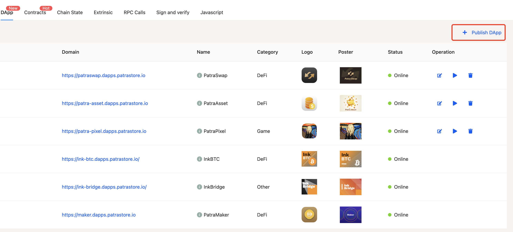

Substrate Contracts Book
Introduction
This book introduces a series of knowledge related to the contract system in Substrate. The book is written by Aten @atenjin, who comes from Patract (https://patract.io/) @patractlabs. You can check the repository of this book on GitHub and we welcome you to contribute to this book.
Because pallet-evm, which is the contract of EVM/solidity system, has relatively rich information in the Ethereum ecosystem, pallet-evem will not be explained as a key point in this contract book. Other contract systems, such as pallet-actor, or libra transplantation contract platform, are in a relatively early stage of research, so they will not be mentioned in this book either.
This book focuses on pallet-contracts, which is the WASM contracts, and contains the following topics:
pallet-contracts: the contract platform (also referred as contract module) to run the contract- Language for writing contracts, which are:
ink!Ask!Solang
- Tools to develop contracts, which are:
RedspotEuropaElara- and so on..
To make contract developers to better understand how the pallet-contracts module and WASM contracts work, this book also includes some information about WASM and blockchain contract models.
Contract System Overview
Model of the blockchain running contract is considered to be the combination of the blockchain environment (distributed consensus system) and a platform that can run a piece of logic. You can see the following examples:
- Bitcoin model can be divided into block model, PoW, and Bitcoin script.
- Ethereum model can be divided into blocks, state model, PoW, and EVM.
- Substrate model can be divided into blocks, state model, Bft consensus, and Runtime.
In conclusion, we can divide the blockchain model into two parts:
- Underlying system that runs the blockchain, which provides a distributed and trusted environment.
- Business logic of the chain, which runs in this trusted environment.
However, the execution results must be consistent for the same code and state, because of features of the blockchain system. Therefore, the running environment must make sure that different running nodes will not cause inconsistent results. To achieve this goal, most blockchains use the sandbox.
The platform for running the contract is the business logic of a chain. The code that can run on this business logic is open, and the content of the contract is not controlled by the chain itself. In this case, a sandbox environment is needed to isolate the running of various contracts.
What is sandbox?
Sandbox is well known in the computer field. In the blockchain, sandbox is generally run by a virtual machine because the virtual machine can simulate the sandbox environment most easily.
Different chains use different virtual machines to run the contract sandbox:
-
Ethereum
The yellow paper written by Gavin Wood proposed the model of EVM, created the concept of EVM virtual machine, and drafted the OP_CODE of EVM. After that, Solidity was designed to be compiled to OP_CODE, and then the entire ecology of Ethereum was created. It is equivalent to Ethereum's contract sandbox model for processing blockchain, building all facilities from zero to one. Therefore, the syntax of Solidity and the things that EVM can do are very simple compared to the current blockchain, such as syntax of solidity and stack depth limit of EVM. However, as a pioneer, it created a blockchain contract virtual machine model.
-
Fabric
As a consortium chain, Fabric is different from the public chain in usage scenarios. Fabric puts forward the concept of chain code and runs the chain code in docker. Docker is a heavier type of virtual machine compared to EVM. Fabric's chain code can do more than Solidity, but its running cost is higher than EVM.
-
EOS
EOS adopts Wasm as the virtual machine of the contract, which is also the selling point of EOS at that time. Compared to running Solidity's EVM, EOS's Wasm virtual machine has a much higher operating efficiency. Using C++ as a language compiled to Wasm has naturally attracted many traditional developers. EOS, as the forerunner of Wasm virtual machine, has already demonstrated the advantages of Wasm over EVM at that time. However, in addition to constraints of the environment, EOS has defects in the contract model design (see the next chapter for details) and is not really a centralized system. Therefore, EOS does not give full play to the capabilities of the Wasm contract system.
-
Substrate's
pallet-contractspallet-contractsuses the Wasm virtual machine to run the contract. Currently, for security reasons, only the Wasmi interpreter is used to execute Wasm. But its contract model is similar to the EVM contract model (see the next chapter for details). Like EVM, Wasm virtual machine has features of fast start-up and hand-to-mouth discard. In addition, Wasm has high performance and high scalability while not being too large like docker and JVM. Therefore, Wasm is slowly being adopted in more scenarios besides the browser environment, such as edge computing, hot updates, and so on. Therefore, more and more new blockchains will use the Wasm virtual machine as the main solution when they need a sandbox environment. On the other hand, Wasm also has the feature of compiling from different languages to Wasm, such as rust, assemblyscript, and c++. This feature can attract all kinds of developers to join the contract development process. -
Other blockchains
Other blockchains will have their own solutions to accomplish this sandbox goal. Some alliance chains use tailored JVMs, some public chains use RISC-V virtual machines, and some chains use slaves. Zero design a virtual machine (such as libra). These solutions have their own requirements and characteristics, but from the perspective of the model, no matter what the solution, the ultimate goal is to provide a virtual machine environment to run the contract sandbox.
Sandbox for running contracts
Most of the business logic of the chain described above will run in the sandbox system, and the business logic of running contract needs sandbox isolation. On the other hand, Substrate's runtime is a sandbox environment (running in Wasm), so in Substrate's contract modules (pallet-emv, pallet-contracts), it is necessary to run another sandbox in a sandbox environment, as illustrated in the following figure:

Where,
- On the left is the Ethereum model, which means that every time a contract is run, an EVM virtual machine needs to be started on the chain platform to run
- On the right is the Substrate model. We currently know that the business logic of the Substrate chain is running in the Wasm virtual machine:
pallet-EVM: The EVM of Ethereum is compiled into Runtime Wasm, so every contract that runs is actually consistent with Ethereum, and an EVM virtual machine is created to run. If the chain is running in Wasm form, an EVM virtual machine is generated in the Wasm virtual machine to run.pallet-contracts: Wasm contracts use Wasm virtual machine to run contracts. The difference from pallet-evm is that if the chain is running in Wasm form, the virtual machine of Wasm contract jumps out of the current Runtime Wasm virtual machine to create a new Wasm. The virtual machine is running.- Currently (0b0d124d before the submission of substrate)
Wasmtimeis recommended for Runtime's Wasm virtual machine, whilepallet-contractscontracts can only usewasmi. pallet-contractscan also be executed usingWasmtime, but currently parity believes thatWasmtimeis relatively uncontrollable, soWasmtimehas not been adopted yet. Currently they have related plans and prototype code to use Wasmtime to runpallet-contractscontracts.
- Currently (0b0d124d before the submission of substrate)
- In short, in the process of running the contract, most chains adopt a sandbox model to run the contract. For the EVM, pallet-contracts model, a virtual machine is created every time a contract is run.
Notes:
Wasmtimeis a Wasm virtual machine that implements JIT, andwasmiis a pure interpreter-type Wasm virtual machine.- The execution efficiency of Wasmtime is much higher than
wasmi.
Contract model
After we have the concept of contracts and contract sandboxes, we can begin to discuss the concept of contract models.
The contract sandbox only represents the environment in which the contract is run, and how the contract is run, how the contract interacts with the contract, and how the contract interacts with the data of the chain. These problems belong to the contract model problem.
In other words, the contract model is the model in which the contract runs in the contract sandbox/virtual machine.

As shown in the figure, the contract model and the contract virtual machine can be decoupled in nature. The only relationship is whether the contract virtual machine can support the contract model required by the upper layer, for example:
- Bitcoin's virtual machine is the stack executor of Bitcoin scripts. Since the executor design is a non-Turing complete OP_CODE, the upper-level contract model can only support Bitcoin scripts.
- Ethereum follows the inspiration of Bitcoin and designed OP_CODE with Turing completeness, namely EVM Virtual Machine (Ethereum Virtual Machine). But the OP_CODE of EVM is relatively simple, and only has a stack design, without the concept of a heap. But EVM introduces the OP_CODE of read and write state, so the contract model can support the state model from the virtual machine mechanism. Therefore, the EVM is also regarded as a state transition machine that performs state transitions (as described in the Ethereum Yellow Paper written by Gavin Wood). The state model is actually a relatively general abstract model. Most models can be simulated with the state model (such as building a UTXO model in the state model). Therefore, theoretically, as long as you continue to improve the OP_CODE of the EVM, the upper layer of the EVM can also be used. Construct other contract models.
- libra believes that the core of the blockchain lies in the processing of assets, so it proposes the Move Virtual Machine (MVM) model to limit the contract model from the virtual machine, which can be understood as a specialized logic OP_CODE collection. Therefore, the upper layer of MVM can only run the Move model.
Through the above discussion, we can recognize the concept of the contract model and understand the limitations of the virtual machine on the upper-level contract model. Therefore, we can discuss the contract model that the Wasm virtual machine can run and the contract model composition of pallet-contracts.
Wasm Virtual Machine
Wasm is a binary instruction format that runs on a stack-based virtual machine. (WebAssembly (abbreviated Wasm) is a binary instruction format for a stack-based virtual machine, from https://webassembly.org/) So Wasm’s model and mainstream computer program The model structure is relatively similar. On the other hand, Wasm is designed to be a more general form, and WASI is designed and supports the free definition of host function in the operating environment. Therefore, although Wasm is developed from the browser, the current usage scenarios are not limited to browsing. It is beginning to take effect on edge computing, hot updates, and serverless platforms.
If the ability of a virtual machine is measured by the completeness of instructions, the EVM is at the level of a semi-finished product, which has many restrictions and is not flexible enough; while the JVM and Wasm virtual machines are relatively complete with few restrictions and strong functionality. On the other hand, the rationality of the instruction design will also affect the execution efficiency of the virtual machine to a certain extent, and the implementation scheme adopted by the virtual machine will also have a relatively large impact on the execution efficiency.
For example, EVM currently can only run in the form of an interpreter, and there is no optimization for the interpreter in the current implementation process body (go, c++, etc.), and the execution efficiency is relatively low, while virtual machines such as JVM and Wasm There are implementations using JIT mode, and the execution efficiency is quite high and even close to the performance of local execution.
Note:
pallet-contractscurrently can only usewasmi(interpreter) to execute Wasm code, so the execution performance of the contract is not as good as that of Runtime usingwasmtime.
At the same time, compared to virtual machines such as JVM, the Wasm virtual machine is very lightweight (lightweight), fast, and highly customizable. ** And the function of host function gives the Wasm virtual machine a channel for interaction with the host** Therefore, compared with other virtual machines, it is easier to combine the Wasm virtual machine as a blockchain contract sandbox with the functions of the chain.
On the other hand, in the author's opinion, Wasm is a better abstraction layer between the bottom code and the upper code, and its complexity and completeness are far beyond EVM, so it is more suitable for the needs of the blockchain contract field.
Therefore, the sandbox environment provided by the Wasm virtual machine meets the following two requirements on the premise that the contract sandbox is satisfied:
- Complete instructions, rich functionality, and high execution efficiency
- There is a suitable interface that can interact with the host (here refers to the environment in which Wasm is running, that is, the chain), so that the host can provide the required functions.
EVM contract model
Since Ethereum is a blockchain that stores state, the contract model of EVM needs basic read and write state functions as it should. If the process of each contract operation is regarded as a process from the start of the program to the end of its execution, then the changes in the state data correspond to the changes in the data that the program needs to persist.
Therefore, for the read and write status, Ethereum's EVM provides two instructions, SLOAD and SSTORE.
On the other hand, Ethereum describes an account using the "account model", that is, the contract and the user calling the contract are regarded as an account. Under this account, there are concepts such as balance, so EVM provides CALLER, ORIGIN , CALLVALUE and a series of instructions to describe this model.
At the same time, because in the abstract system of EVM, the contract and the user are considered to be consistent, the model of "contract call contract" appears, namely CALL, DELEGATECALL and other instructions, which brings the composability of the contract. Created a prosperous Ethereum ecosystem. In EVM, a contract relies on one EVM to run, so the contract calling contract starts another EVM in one EVM and loads instructions for execution.
Of course, the original intention of the EVM virtual machine design is to solve the problem of non-Turing completeness of the Bitcoin script. In order to solve this problem and ensure that the downtime problem does not occur, the instruction Gas billing model is introduced.
Therefore, in summary, the EVM contract model has the following characteristics:
- The data processing model is a state machine model, and state changes are triggered by external calls (analogous to the process of calling a state change function);
- The contract model requires chain-related features;
- Treat the contract as consistent with the user and allow the contract to call the contract;
- Introduce an instruction billing model.
The contract model of pallet-contracts
Here is a direct conclusion: pallet-contracts uses the Wasm virtual machine to execute code, but its contract model is basically the same as the EVM contract model.
In other words, the contract model of pallet-contracts also has the following 4 characteristics:
- The data processing model is the state machine model;
- The contract model requires chain-related features;
- Treat the contract as consistent with the user and allow the contract to call the contract;
- Introduce an instruction billing model.
And, on the basis of the above 4 characteristics, a "storage leasing model" has been added:
Rentstorage lease billing.
As mentioned above, the contract execution environment and contract model can be decoupled. Since the EVM was designed relatively early, there is no concept of decoupling this level, so the instructions in the instructions are SLOAD, SSTORE and similar. The instructions are combined with other instructions of the EVM. And Wasm was not originally designed for the blockchain, so there must be no instructions related to the chain environment.
So Wasm's host function is used to accomplish this. As the host of the host, the chain only needs to provide the methods that he thinks the contract may use to the Wasm virtual machine, and let him import these function objects, which can be used during the execution of the contract. Therefore, through the host function, the pallet-contracts contract module can have 1, 2, and 4 functions, and will provide some of the functions required by 3, and the fifth feature (rental billing) can also be introduced.
And the implementation of the third function is also consistent with EVM. When there is a part of the contract calling the contract, it returns to the pallet-contracts module from Wasm through the host function, and starts a new Wasm virtual machine to execute The contract being called. (This part will be described in a future article)
So in summary, the contract model of pallet-contracts has the following characteristics:
- The contract model is consistent with the EVM contract model, and a storage billing model is added on this basis
- The interaction with the chain is realized through the
host functionfeature of Wasm
Use Wasm virtual machine to implement other contract models
I just briefly described how pallet-contracts implements the contract model on the Wasm virtual machine. Since the previous article has explained that the virtual machine and the contract model can be decoupled, in fact, other things can also be implemented on the Wasm virtual machine. Contract model.
For example, we can consider porting the Move virtual machine to the Wasm virtual machine. There are two possible implementations:
-
Analogous to running the EVM implementation in the Runtime Wasm environment, the MVM implementation can also be compiled into the form of Wasm (for example, named
pallet-mvm) and run in the Runtime Wasm.Based on this implementation, Move can still be compiled in the normal way, and it is consistent with the compilation result of Solidity running on
pallet-evm, and the result of Move compilation is run on a platform such aspallet-mvm. -
Abstract the MVM, ownership, and chain-related features into a form of
pallet-contracts, and design to compile the intermediate code IR compiled by the Move language to Wasm.Based on this realization, Move can be compiled into Wasm and run in the Wasm virtual machine.
Other contract models
EOS contract model
EOS's contract model is similar to EVM, while strengthening the concept of account model. Therefore, the way EOS uses Wasm is also based on the execution of Wasm, and introduces chain-related functions through host function.
The main difference between the EOS and EVM models is that the EOS contract calls the contract in the form of a transaction, and the EOS resource model is a mortgage model. At present, it is generally believed that it is the EOS mortgage model that ultimately led to EOS not succeeding.
Asynchronous contract model
The pallet-actor is the beginning of Substrate's attempt to implement the asynchronous contract model, and there is currently no progress. The model of pallet-actor intends to use the Wasm virtual machine as the operating environment, and on this basis add asynchronous functions to improve performance.
There are also a few other studies on asynchronous contract models, but they are all in a relatively preliminary stage.
Contract language (framework)
Corresponding to the concept of "contract model" (operating platform), we can derive the concept of contract language (framework) (writing code that can run on the platform).
Instead of simply using "contract language", we use words like "contract language (framework)" because we have separated the "contract sandbox" and "contract model" in the previous chapter. Structure level, so in fact, some new contract platforms did not "invent" a new Solidity contract language like EVM, but chose some languages (such as Rust, C++, AssemblyScript, etc.) based on this language. "hack syntax analysis", "macro", and other dimensions add contract-related constraints and functional logic to existing languages. Therefore, in many cases, it will exist in the form of "frame", "library", etc. (such as Frame Contract Pallet's rust contract language framework ink!). And this "framework/library" is not the dimension of libraries used in usual program development. Some contract language frameworks need to be modified to the compiler dimension, so we prefer to call them "language frameworks".
Correspondence between contract language (framework) and contract model

As shown in the figure above, the upper part is the relationship between EVM and Solidity. Since EVM/Solidity was proposed earlier, its model is consistent with the usual model relationship between computer virtual machines and languages. The lower part is the correspondence between the language framework part after separating the contract model.
Here we will focus on the second half. The readers of the first half can analyze according to their own experience in Ethereum contract development compared with the introduction in the following text.
In the system of compiled language, first simply define the following nouns (not rigorously speaking, defined only for the following introduction):
- S language: the original language (source) for programmers to write code, for example, to compile C++ into assembly, then C++ is the original language S
- T language: The language (target) produced after S language is compiled by a compiler, for example, if C++ is compiled into assembly, then assembly is the target language T
The previous article has introduced that the environment for running the contract system can be logically split into a "contract model" and a "contract virtual machine". The former manages the business logic of the contract, and the latter manages how to run the code of the contract, so the corresponding contract language The part can also be disassembled into "contract language framework" and "S language compiled into contract virtual machine".
According to this definition, it is clear that Solidity is a product that has the characteristics of both "contract language framework" and "S language":
-
Solidity has a Turing complete language system, so Solidity is a "language" (relative to the BTC script)
-
The grammar of Solidity has many keywords with contract characteristics, corresponding to the concept of "contract language framework", such as:
mapping: A typical case of contract storagemsg.sender,msg.value: variables related to contract callsview,pureand other modifierscall,delegate_calland other keywords related to contract calls
These concepts do not exist to support the logic of the Solidity language, but to serve the business logic of the Ethereum contract virtual machine.
The purpose of the "contract language framework" is to correspond to the business logic of the contract model. What kind of contract model requires what kind of contract language framework. For example, the bottom layer of EVM is k/v type storage, so the mapping designed in Solidity cannot be traversed (unless extra storage is attached). For example, the contract model of EVM contract interaction is designed as a contract calling contract mode, so Solidity provides call and delegate_call. The same applies to other contract systems.
On the other hand, the contract language framework is an additional function built on the S language, so the functions provided by the contract language framework are ultimately compiled to the T language corresponding to the S language. Some of the features required by the blockchain, such as deterministic requirements, not allowed to use the interface called by the operating system, etc., will be constrained at this level. Therefore, the contract language framework not only provides the function of the contract model for the S language itself, but also needs to impose certain constraints on the language itself. This step is also a difficult place to develop and understand the contract language framework. At the same time, it is precisely because of this point that causes many awkward situations in the process of contract developers using the contract model framework. Languages such as Solidity or Move are new languages developed for contract platforms. Even though their grammar will have many traces of simulating other languages, they can be more friendly to contract developers in terms of constraints. However, it is difficult to deal with the contract language that adds the contract language framework function to the existing language, and this is one of the reasons why it is difficult for contract developers to use the framework function.
Take ink! for example:
-
Float should be avoided in the blockchain, because floating-point numbers may produce non-deterministic behavior. Therefore, in contract/runtime development, if you need to use floating-point numbers, or multiply and divide overflow numbers, you need to introduce fixed-point numbers for processing. Therefore, the fixed-point library provided by Substrate runtime can be introduced into the ink! contract for processing.
-
Since the contract model of
pallet-contractsis basically the same as EVM, the contract storage ofpallet-contractsis also composed of K/V. Then the contract model framework needs to deal with the various collection types provided in the standard library. Therefore, the collection types that may be used in the standard library are rewritten in ink!, and the process of processing the collection element types into K/V data is added. Therefore, in the ink! contract storage, if a collection type is designed, only the types provided in the ink! standard library can be used. On the other hand, since the return value of ink! needs to export metadata for third-party processing, and the current metadata interface implementation is only implemented for the collection in the standard library, so the collection of the return value of the ink! method can only use the collection of the standard library. Types of. So the following code will appear:#[ink::contract] mod test { // Introduce Vec realized by ink use ink_storage::collections::Vec as StorageVec; // Introduce the Vec of the standard library use ink_prelude::vec::Vec; #[ink(storage)] pub struct Test { owners: StorageVec<AccountId>, // Only ink's Vec can be used } impl Test { #[ink(message)] pub fn get_owners(&self) -> Vec<AccountId> { // Convert Vec implemented by ink to Vec implemented by standard library self.owners.iter().map(Clone::clone).collect() } } }
So in summary, in the model structure, developers need to understand:
- The contract language framework corresponds to the contract model, and the characteristics of the language framework will match the model one by one;
- The contract language framework provides the S language with business functions for the contract model, and it also restricts the S language itself according to the requirements of the contract business logic.
However, because Solidity itself is positioned as a language designed for writing contracts, many contract-related functions can be designed as keywords. And if a language itself is not designed for contracts, it is necessary to design a "contract language framework" corresponding to the contract model based on this contract. Since new functions are added to this language, it is generally difficult to integrate with the language itself in depth. Therefore, the final result is related to the ability of this language to expand the syntax tree. The language itself provides more flexible interfaces (macros, plug-ins, etc.) for modifying/adding the syntax tree, the more functions the contract language framework can achieve. The less the language itself provides such extensibility functions, the contract language framework can only consider modifying the compiler and extending the required grammar to support the contract model, so that the final language becomes a "dialect" of the original language. Up. Therefore, the former can exist in the form of a library/framework, while the latter becomes a new language. This is why we call this model the "contract language framework".
pallet-contracts and the corresponding contract language framework

After explaining the contract language framework model above, we can apply the contract model framework to Substrate's Wasm contract system.
Obviously, the realization of the ink! system corresponds to the contract model of pallet-contracts. ink! 3.0 introduces the functional logic corresponding to pallet-contracts into rust through the system of process macros (2.0 through god declaration macros). Therefore, the S language in this system is rust, and the T language is Wasm bytecode. With the help of an auxiliary tool cargo-contract, the rust code using the ink! framework is compiled into the Wasm bytecode of the contract. The environment in which Wasm bytecode runs on the chain is wasmi (Wasmtime and other JIT execution environments will also be introduced in the future).
And because the execution environment of pallet-contracts is Wasm bytecode, the language that can be compiled into Wasm bytecode is matched with a contract language framework that conforms to the pallet-contracts contract model, and it can be generated that can run on pallet. -contracts The contracts on this contract platform. So for pallet-contracts, it is completely possible to design contract systems in different languages to provide multiple options for development and use different languages to develop Wasm contracts.
In addition to rust's ink!, the contract language framework that currently supports running on pallet-contracts also has the following items:
- Ask!, developed by Patract, is a contract language framework based on the AssemblyScript language. (Currently under development)
- Solang, developed by hyperledger-labs, supports to compile Solidity to Wasm tool of
pallet-contracts.
Brief introduction of Wasm
The association between Wasm and contract model

pallet-contracts 合约模块
pallet-contracts合约模块, 一般称呼为“Contracts Pallet” 或者 “FRAME Contracts pallet”，又或者称呼为“Substrate Smart Contracts”，是parity官方研发的Wasm合约模块。
依据Substrate knowledgebase的介绍，Contracts Pallet具备如下特性：
- Are inherently safer to the network.
- Have built in economic incentives against abuse.
- Have computational overhead to support graceful failures in logic.
- Have a lower bar to entry for development.
- Enable fast pace community interaction through a playground to write new logic.
ink
ink! is an eDSL to write WebAssembly based smart contracts using the Rust programming language. The compilation target are blockchains built on the Substrate framework.
Although ink! claims to be a kind of eDSL for writing contracts, I prefer to think that ink! is a contract framework written in Rust language that meets the requirements of Contracts Pallet.
For example, for EVM, if the instruction set of the EVM is regarded as a specification (the instruction set of the EVM already contains the information of the EVM contract model), then as long as the language can be compiled into the instruction set of the EVM, it can be said to be able to run on the EVM Contract language on the Internet, for example:
- Solidity
- Vyper
And ink! Same here. Contracts Pallet requires Wasm code that can run the Contracts Pallet contract model, so any framework/language/library that can be compiled to meet this Wasm contract model can be called Contracts Pallet's contract language.
ink! is to use the Rust language, and on this basis, design a set of eDSL through Rust's hygienic macro system, and use this eDSL to write Rust code that meets the requirements of Contracts Pallet. In addition to eDSL, ink! also provides a storage collection type suitable for contract models, generating Metadata (corresponding to Solidity's ABI) and other tool libraries.
See the official documentation of ink!:
ink! The process to the Contracts pallet
An example image is provided in the official parity document:

From this figure, we can see that the process of writing and deploying the ink! contract requires
- ink! dependent library: provide ink! eDSL framework and provide corresponding dependent components
- cargo-contract: tool for compiling ink! contract
- SDK: SDK that interacts with the chain and deploys the contract to the chain. The official parity mainly provides
polkadot.js, and Patract provides the Himalia toolkit, includinggo,java,python,C#SDK
This chapter will mainly introduce ink! and cargo-contract information, and the information about SDK will be introduced in the following chapters.
ink! tutorial
TODO
ink! Framework
All the main functions of ink! are implemented in the ink/crates directory:
- crates:
- allocator: related to Wasm, define allocator, developers do not need to care in most cases
- env: Provides components that interact with the chain. In summary, the parts related to the chain will be placed here, including
- host function part
- Some types and trait definitions that need to be imported
- topic of event
- lang: The definition component of the eDSL process macro, the contract specification is determined by this place
- metadata: components that generate metadata
- prelude: A package that needs to be imported in advance during the contract writing process, including some standard libraries
- primitives: pointers to operating state storage, developers do not need to care in most cases
- storage: provide chain storage allocation model and provide some predefined storage collection types
ink! eDSL basic elements
The elements of ink! eDSL design are actually relatively similar to those of Solidity, because the contract model structure of Contracts Pallet and the contract model of EVM are relatively similar.
Therefore, the design of ink! can find a lot of shadows similar to Solidity (the same applies to the Runtime design of Substrate). When describing the ink characteristics later, I will try to compare with the characteristics of Solidity, which is convenient for readers to understand.
Elements of eDSL
From the example provided by ink! documentation or ink!, the code shows that ink! also proposes the following three basic elements on the Contracts Pallet model:
constructor/messagestorageevent
However, due to the design relationship of the Rust process macro, you can see that ink! First requires a contract to be under a mod, and add the #[ink::contract] macro to this mod:
#[ink::contract]
mod erc20 {
// ...
}
In this way, it is equivalent to telling ink! What is in this mod is to be processed according to the eDSL of ink.
#[ink::contract]
Therefore, when you encounter the macro #[ink::contract], it appears that this is the "contract part" identified by ink!. Therefore, we can see that many imports of use xxx will be placed under the scope of mod in #[ink::contract].
And the current ink! design is that, under a crate package, only one #[ink::contract] can appear, so it means that ink! thinks that the dimension of a contract is based on rust's crate, that is If in the same crate, whether in the same file (for example, under lib.rs) or in different files, more than two are defined by #[ink::contract] The mod, for example:
#[ink::contract]
mod erc20 {
// ...
}
#[ink::contract]
mod another_define {
// ...
}
Analogous to solidity:
// a.sol defines multiple `contract` in the same file
contract A {
}
contract B {
}
Then in the compilation of ink!, this situation will be considered illegal.
Of course, as opposed to this, as long as there is only one mod modified by #[ink::contract] in the current crate, other mods should be used normally, so the contract modified by ink! crate can still do a good job of code isolation, enhance readability and maintainability**. This ability is important for maintaining large and complex contracts, such as:
#[ink::contract]
mod erc20 {
use crete::another_define::*;
}
mod another_define {
// ...
}
For example, the following example:
mod fxck {
use crate::erc20::Erc20;
use ::ink_lang::Env; // Note that `ink_lang::Env` needs to be introduced here
impl Erc20 {
pub fn tmp(&self) {
self.env().caller(); //
}
}
}
#[ink::contract]
mod erc20 {
#[ink(storage)]
pub struct Erc20 {...}
impl Erc20 {
#[ink(constructor)]
pub fn new(initial_supply: Balance) -> Self {...}
#[ink(message)]
pub fn transfer(&mut self, initial_supply: Balance) -> Self {
self.tmp(); // call methods defined in other `mod`
}
}
}
This model can achieve some code isolation that cannot be done under Solidity, and enhance maintainability. (Because Solidity's library can only be used for pure function calculations)
In summary, under the ink! system:
- A contract is in a
crateunit, and only one#[ink::contract]definition can appear in acrate; #[ink::contract]modifiedmodrepresents the content of the contract, and also represents the basic elements of the contract must be defined under thismod;- All parts other than
modmodified by#[ink::contract](othermod, functions, types) follow the rules of rust, and good code isolation can be done to improve maintainability; - In practice, the
modmodified by#[ink::contract]can be used as the entry point of the contract, and the implemented logic can be distributed to othermods.
The following uses "contract mod" to indicate a mod modified by #[ink::contract]
storage
In the contract mod, a structure must be defined, and this structure is modified by #[ink(storage)], indicating that the storage of the contract is defined.
At the same time, this structure definition modified by #[ink(storage)] is also regarded as an operable contract entity**, so all contract-related resources, types, and operations will be ** and this structure The body is bound together**. When the contract calls the contract, the type of the called contract is also represented by this structure.
Therefore, this structure can be understood as a contract entity.
Although the part that modifies
modis the contract, becausemodcan only represent the scope in rust, so for practical use, use the structure modified by#[ink(storage)]to indicate that it can be operated Contract entity.In this context, the
modmodified by#[ink::contract]can be understood as the concept of "opening the contract domain", while thestuctmodified by#[ink(storage)]It is a contract under this contract domain.
Here, the concept of storage defined by ink! is consistent with the concept of “storage” defined in Solidity, which means that the attributes defined here are the final state written to the chain. The purpose of writing all contract logic is to modify the state defined here.
However, because the current ink! uses a structure to carry the contract state, all the states of the current contract can only be defined in this structure. When the contract is designed to be relatively large and complicated, the maintainability here will decrease.
An example of defining storage is as follows:
#[ink(storage)]
pub struct Erc20 {
/// Total token supply.
total_supply: Lazy<Balance>,
/// Mapping from owner to number of owned token.
balances: StorageHashMap<AccountId, Balance>,
/// Mapping of the token amount which an account is allowed to withdraw
/// from another account.
allowances: StorageHashMap<(AccountId, AccountId), Balance>,
}
Structures modified by #[ink(storage)] are collectively referred to as contract structures in the following text.
Here are a few features that need to be paid special attention to:
-
The type of the attribute defined in the contract structure must be a type that has implemented
SpreadLayout(or more accurately, a type that implementsPackedLayout, becausePackedLayoutis inherited from the definition ofSpreadLayout):/// Types that can be stored to and loaded from the contract storage. pub trait SpreadLayout { }The reason why only the type that implements this trait can be used here is very simple, because storage is different from the general type, it must contain the information of the "chain" in it, so the contract implementation of different chains must have a part for processing The storage (that is, state) allocation problem in the contract.
For example, during the compilation process of Solidity, the key of the state is actually assigned according to the upper and lower order defined by the storage in the contract. If the
SpredLayoutorPackedLayouttype has been implemented here, there will be an approximate process for state allocation.Ink! has done basic implementations for general types, but for collection types (
Vec,HashMap, etc.), because the state of the contract needs to hook the process of reading and writing, it cannot be implemented for collection types Thistrait. Therefore, in ink!, all the commonly used collection types in the standard library have been re-implemented, and the attribute types of the structure modified by#[ink(storage)]must be used if the collection type is used. The collection type provided by ink!**.Since Solidity is relatively rudimentary, the storage map defined by Solidity cannot be traversed. (Caused by a defect in the Solidity design)
ink! has done a lot of things when designing this piece, so the collection types
Vec,BTreeMap,HashMapand so on provided by ink! are all traversable. Compared with the functions that Solidity can achieve, it is a considerable improvement. -
Even based on the above design, the nested collection type is still difficult to implement (because the state structure of Substrate uses the k/v model). Therefore, in the design, we can only try to avoid nested collection types. If you must nest the collection type, you need to flatten the nesting level, merge the second-level key and the first-level key together, and use tuples instead (equivalent to
double_mapin Substrate Runtime)// solidity contract A { mapping (uint => mapping (uint => uint)) }The similar code in ink! should be:
#[ink(storage)] pub struct Erc20 { // Note that the key here uses the tuple `(AccountId, AccountId)` allowances: StorageHashMap<(AccountId, AccountId), Balance>, } -
A model of
Lazyis provided in storage, which allows developers to useLazyto wrap a type so that the state data can be loaded when it is used:/// A lazy storage entity. /// /// This loads its value from storage upon first use. /// /// # Note /// /// Use this if the storage field doesn't need to be loaded in some or most cases. #[derive(Debug)] pub struct Lazy<T> where T: SpreadLayout, { cell: LazyCell<T>, }How to use:
#[ink(storage)] pub struct Erc20 { /// Total token supply. total_supply: Lazy<Balance>, }
constructor/message
constructor/message is the entry function that triggers the contract state change. In other words, constructor/message is the state transition function of the contract state.
constructor/message can only modify the methods of the contract structure**, and cannot be used to modify the methods of other structures or other pure functions.
In the contract mod, there is at least one method for the contract structure modified by constructor and message. If there are less than one respectively, it will cause compilation error.
among them:
-
constructorcorresponds to the constructor in the Solidity contract. When the contract is deployed (in Contracts Pallet currently represents the process of doinginstantiatefrom the uploaded contract code), a call to the corresponding constructor will be triggered.It needs to be emphasized here that the call of the constructor and the instantiation of the contract are two conceptual things. This process is not atomic in the coordination process of ink! and Contracts Pallet. Therefore, the constructor may not be called, but the contract address will be generated, and the contract instance for which the constructor has not been called can be called normally.
A typical example is the wrong code parameter passed in when calling
instantiate. -
messagecorresponds to the call methods such aspublic/externalin the Solidity contract. Due to the characteristics of Rust's mutable/immutable methods,messageuses the ** feature to indicate whether this method will modify the state of the contract**.So if the method of
messagemodification is// Note that the first parameter of the method is `&self` #[ink(message)] pub fn total_supply(&self) -> Balance { *self.total_supply }It means that the call of this method will not modify the state (controlled by the rust syntax), which is consistent with Ethereum. This type of method is mostly used for rpc calls to return the storage of a contract or return some storage-based calculation results.
If the modification is
// Note that the first parameter of the method is `&mut self` pub fn transfer(&mut self, to: AccountId, value: Balance) -> Result<()> { let from = self.env().caller(); self.transfer_from_to(from, to, value) }It means that the call of this method will modify the state, so if this method is called and executed in the form of a packaged transaction call, it will trigger a state change. If it is called by rpc, it means that the simulation has been executed once.
At the same time, metadata.json (corresponding to the ABI of Solidity) will be generated after the contract is compiled. In this metadata, there will be a
mutatesfield for the message part to indicate whether the method is variable.
message's selector
For the generation of the ABI of the contract method, Solidity uses the method name plus the parameter type as a function signature to piece together into a string and then make a hash to take the first 4 bytes.
call = "func_name(param1_type,param2_type,...)"
bytes4(keccak256(call), a, b)
In ink!, this concept that allows contracts to distinguish call trigger points is called selector.
Since rust does not support function overloading, a relatively simple design is adopted in ink!, which directly hashes the string of the function name and takes the first 4 bytes:
call = "func_name"
blake2_512(call)[0..4]
The author believes that this design has caused problems with other contract language designs. Because rust does not support overloading, it does not mean that other languages do not support overloading. After Solang compiles Solidity to Wasm, if it wants to be compatible with ink!'s metadata, problems will arise when calling each other.
On the other hand, selector can also run the contract developer's own definition
#![allow(unused)] fn main() { #[ink(message, selector = "0xCAFEBABE")] pub fn was_it_ten(&self) -> bool {...} }
message of payable
There is a payable modifier for the method in Solidity, which is used to indicate that the method can accept a certain amount of money.
Therefore, payable is also provided in ink! to indicate whether it is possible to transfer a certain amount of local currency while calling this method. In the current design of ink!, if a non-payable message is called with an amount at the same time, the calling process will be regarded as an error.
By default, paybale is considered to be false, and it is true only when the contract developer specifies payable.
The case for specifying a message to be callable is:
#![allow(unused)] fn main() { #[ink(message, playable)] pub fn was_it_ten(&self) -> bool {...} }
On the other hand, in metadata, there will be a payable field for the message part to indicate whether this method requires payment.
event
The concept of event is not necessary in the state machine model. However, because blockchain is an asynchronous system, after sending a transaction to trigger a state change, the result of the change cannot be immediately known, and it can only rely on monitoring an element to determine the execution result. event is an element designed at the stage of Solidity, and this design is also inherited from Substrate Runtime and ink!.
I don't think event is a good design. In theory, there are other better ways, or variants of event. Event will cause abuse by developers to a certain extent.
The event of ink! in Contracts Pallet finally prints the event defined by the contract to the event of the chain through the host function.
The event design of ink! is nothing special compared to Solidity, but because it is a contract running in Wasm, the event of the printing contract needs to interact with the chain through the host function, so the calling method needs to be passed through. env()` to call.
Self::env().emit_event(...);
// or use
self.env().emit_event(...);
ink! 跨合约调用
ink! 与solidity的对比
cargo-contract
ink! 当前的坑
Ask!
Ask! is a Wasm contract language framework designed by Patract, built on AssemblyScript and able to run on the pallet-contracts module.
Although AssemblyScript is only a subset of typescript, there are many developers who use typescript as a development language, so the cost of learning AssemblyScript for these developers is very low. Therefore, Patract believes that the Ask! project has good application development prospects. Compared with the Rust-based ink!, Patract believes that the typescript-based Ask! can effectively lower the threshold for contract developers and enrich the contract development ecosystem.
Ask! uses and ink! takes a similar approach to macro design eDSL. By providing annotations in AssemblyScript (hereinafter referred to as AS), it provides functions that can be applied to the pallet-contracts contract model based on the syntax of AS. Through the implementation of annotations, the details related to the contract are hidden as much as possible. On the other hand, the realization of Ask! will be close to ink!, and the final realization will ensure compatibility with the ink! contract to the greatest extent.
for example： ink! describes the external call interface of the contract using
#[ink(constructor)],#[ink(message)]to modify the method of the contract structure.In Ask!, annotations such as
@constructorand@actionwill be used to modify contract class methods to achieve similar functions.
Ask! Development progress
**Ask! is currently under development, and currently only the v0.1 version of the Kusama financial proposal has been completed. Many current designs may undergo incompatibility changes in the future. **
TODO： 添加议案链接及报告链接。
tutorial
At present, Ask! has only carried out the development of the first phase of the Kusama Treasury bill. Therefore, it has not been released to public repositories such as npm.
Simple start：
-
clone project
$ git clone https://github.com/patractlabs/ask -
example contract
Some case contracts, such as
flipper,incrementer, etc., are prepared in the Ask! project, under the/exampledirectory. Developers can directly refer to these projects, or they can perform the following process by creating a new typescript file (*.ts). The final code of the following example process is located in the/example/solardirectory.-
create file
solar.ts -
define contract storage
Ask! uses the annotation
@storageto define the storage of a contract. This process is similar to the#[ink(storage)]macro in ink!. For example, in this case, we define the following three contract storage variables:@storage class Planets { name: string; radius: u32; isdwarf: boolean; } -
Define the scope of the contract and callable methods:
Ask! uses the
@contractannotation to specify a class as the contract class. This process is similar to the#[ink::contract]macro in ink!.@contract class SolarSystem { // ... }Ask! provides
@constructorand@messageannotations to modify the methods in the contract class, similar to#[ink(constructor)]and#[ink(message)]in ink!.@contract class SolarSystem { @constructor default(name: string) void { /*...*/ } @message(mutates = false, selector = "0x0a0b0c0d") getRadius(): u32 { /*...*/ } } -
Compile the Ask! contract
-
Installation dependent environment:
Enter the root directory of the Ask! project and execute the command:
$ npm install -
Compile
Compile the contract in the root directory of the Ask! project. Assuming that the path of the current contract is located in
examples/solar/solar.ts(developers can replace with the path of their own contract files), then the compilation command is:./assembly/codegen/bin/ask examples/solar/solar.tsAfter executing this command, an extension file
extension.tswill be generated in the contract file directory, and the compiled product of the contract is located in thetargetdirectory under the contract file directory. -
Test
Developers can use the contract execution environment sandbox Europa provided by Patract to deploy and test contracts.
After starting Europa, developers can deploy and call contracts in the
targetdirectory through https://polkadot.js.org/apps. This process is similar to Ink! The operation process of the contract is the same.
-
-
Design
Ask! Design Overview
AssemblyScript uses the asc compiler to compile TypeScript (TS) files into WebAssembly bytecode. However, asc is a general-purpose compilation tool, and the smart contract structure cannot be used to directly compile TS files into WASM bytecode and metadata information. Therefore, in order for asc to recognize and parse the contract-related annotations and specific grammar provided by Ask!, asc needs to be modified.
Design
ask! will provide two components, Contract Framework (referred to as Framework in the following description) and Contract PreProcessor (referred to as PreProcessor in the following description). In addition, we will also provide a support tool called ask-cli (similar to ink!'s cargo-contract) to help build and manage Ask! Wasm smart contract written.
The functions of Ask! are implemented as follows:
-
The main function of
Frameworkis to provide advanced packaging for on-chain APIs, and then provide specifications for writing contracts through annotation types. It needs to complete the following tasks:- Define the annotation-based contract writing specification
- Define the description specification of the contract interface in the metadata
- Encapsulate the detailed information of the data interaction between the contract and the chain, such as the definition of the key generation rules in the contract storage and the storage read and write
- Encapsulate functional components on the chain, such as Balance, AccountId, Block, Crypto, etc.
- Compile the AS contract into Wasm code according to the semantics of the contract, and include the link symbol of the interactive interface with the FRAME contract.
-
The main function of
PreProcessoris to parse the annotations defined in the framework and generate corresponding logic codes for these annotations. According to the contract interface specification in the framework, a metadata file is generated. This part needs to complete the following tasks:- Parse the annotations in the contract and generate the corresponding logic code
- Analyze contract interfaces and parameters, and generate metadata files
- Parse the custom contract grammar (syntactic sugar) and generate the corresponding logic code
- Automatically store and load data
-
The main function of
ask-cliis to manage the Ask! project in cli, which includes the following functions:- Create ask! contract template.
- Simplify ask! During the project compilation process, the detailed information of the preprocessing and compilation process is hidden.
- Manage the version dependency of
Framework,PreProcessorand Compiler. - Check the legality of the generated Wasm code.
基础
example
Solang
Redspot
Redspot is a contract integration builder that allows developers to simplify the process of testing and interacting with contracts by projecting the development of contracts such as ink! The Redspot system allows developers to build rich plugins that extend Redspot's functionality, minimizing the burden on contract developers and automating the execution of repetitive processes.
Redspot is designed to be similar to Truffle in the Ethereum ecosystem, but with a broader set of extensions than Truffle.
Patract believes that Redspot must be a flexible system, since the pallet-contracts contract module can be integrated directly, or with some modification, into the Substrate chain. Therefore, Redspot decided to use hardhat as the core Redspot architecture because it has an excellent design that allows developers to add new features using plugins.
So Redspot comes from the hardhat fork (based on the MIT protocol) and removes the Ether-related parts from its base and adds features related to the Substrate and pallet-contracts modules. In the future, Redspot will build more features based on hardhat's core.
tutorial
Environment preparation
Installing Node
We require node version >= 12.0, if not, you can visit the nodejs website and learn how to install or upgrade. Alternatively we recommend that you install Node using nvm. Windows users can use nvm-windows instead.
ink! Toolchain for contract compilation
-
rust environment. Since the ink! contract requires rust's Wasm toolchain, and Wasm currently only runs under the nightly toolchain, developers need to prepare the Wasm compilation environment first: ``bash
rustup install nightly rustup component add rust-src --toolchain nightly rustup target add wasm32-unknown-unknown --toolchain nightly rustup component add rust-src --toolchain nightly
The tool to compile the contract cargo-contract.
Please note that the following command installs the official `cargo-contract` provided by parity by default (currently the latest version is 0.10.0).
``bash
cargo install cargo-contract --force
```
With Europa you can use the `cargo-contract` provided by Patract, which provides an optional `-d/--debug` command
``bash
cargo install cargo-contract --git https://github.com/patractlabs/cargo-contract --branch=v0.10.0 --force
```
If you installed `cargo-contract` without feature `binaryen-as-dependency`, you need to prepare `wasm-opt` in your current environment.
- install
wasm-opt(optional)
wasm-opt comes from the repository https://github.com/WebAssembly/binaryen. Developers can download the latest compilation product for the corresponding platform directly from the release. Direct downloads should be placed in a PATH path that can be accessed from anywhere.
Alternatively, developers can install wasm-opt via the system command
TODO Determine the installation method for different platforms
Prepare a blockchain node that can run contracts
1. Jupiter
Jupiter https://github.com/patractlabs/jupiter is maintained by Patract, contains the Patract contract design specification and is compatible with the latest pallet-contracts module of the contract testing network.
Jupiter has three types of nodes.
- a parallel chain of Jupiter contracts running on rococo.
- Jupiter standalone test networks that run independently to provide the latest contract functionality to the outside world.
- Jupiter nodes for fast local testing
See the Readme of this project for information on the differences between these three types of nodes and their compilation and installation.
2. Europa
Europa https://github.com/patractlabs/europa is a contract sandbox designed by Patract to help contract developers debug and test their contracts. It is similar to Ganache in the Ethereum ecosystem, but the features of Europa are more in the sense that it provides a log of detailed execution information during the deployment of contract invocations, which can reflect the operation of the contract module as a "black box" to the maximum extent, and is very helpful for contract This is very helpful for contract developers.
Developers can install and start Europa simply by
cargo install europa --git https://github.com/patractlabs/europa --locked --force
europa --tmp
For different versions of Europa and other information, see the Readme for this project.
3. Canvas
Canvas https://github.com/paritytech/canvas-node is the official contract test chain provided by parity with the pallet-contracts module. module, which is a test network maintained by the parity ink! & pallet-contracts development team.
To participate in the canvas network, please refer to the Readme for this project. if the purpose is just to run the test node locally, you can execute the following command.
cargo install canvas-node --git https://github.com/paritytech/canvas-node.git --force --locked
canvas --dev --tmp
Create a Redspot project
Installing from a Template
Redspot provides contract development templates that allow users to quickly build a project. Currently, only templates for the erc20 contract are supported for installation.
To create a new project from the template, you can choose to use npx. npx is a package executor that comes with npm (npm 5.2+ ). Running the following command will pull the latest Redspot and build the Redspot project using erc20 as the template.
npx redspot-new erc20
Note that Redspot does not yet provide the ability to create projects from templates, as ink! changes frequently at the moment. Developers who need additional project templates can copy them from the example directory in Redspot's project repository https://github.com/patractlabs/redspot to directory in Redspot's project repository [] () and change the configuration such as the project name. All cases in the example directory are already in the Redspot project structure, so there is no need for the user to run
npx redspot-newto create the project.
If a project has already been created by Redspot, there must be a file redspot.config.ts in the root of the project to mark the project as Redspot, and package.json in the same directory controls the version of Redspot that corresponds to the project.
If a contract developer has obtained a Redspot project from github, or example, or otherwise, and another developer has built it, going to the project directory and running yarn install will restore the Redspot environment used by the Redspot project, as in the following example.
# copy the delegator multi-contract example from redspot repo to local dir
cp -r . /redpost/example/delegator . /
cd delegator
yarn install
The default template is already configured with typescript. It is also recommended that you use typescript for development. Even if you have no experience with typescript, typescript is javascript-compatible, works without any type definition, and still has the powerful type hinting and error hinting features of typescript.
Integration into existing contract projects
Redspot can also be easily integrated into existing contract projects. Let's take the contracts in the examples directory of the official ink (https://github.com/paritytech/ink) repository as an example.
Compile the contract
First clone the ink repository and open the ink directory.
git clone https://github.com/paritytech/ink.git
cd ink
Then we create the following three files in the ink root directory.
redspot.config.ts:
import { RedspotUserConfig } from 'redspot/types';
import '@redspot/patract'; // 引入 @redspot/patract 插件
import '@redspot/chai'; // 引入 @redspot/chai 插件
export default {
defaultNetwork: 'development', // 默认的 network
contract: {
ink: {
toolchain: 'nightly', // 指定编译合约时的 toolchain 版本
sources: ['examples/**/*'] // 合约所在的目录
}
},
networks: {
// development 网络的配置
development: {
endpoint: 'ws://127.0.0.1:9944',
types: {},
gasLimit: '400000000000', // 设置默认的 gasLimit
explorerUrl:
'https://polkadot.js.org/apps/#/explorer/query/?rpc=ws://127.0.0.1:9944/'
},
},
mocha: {
timeout: 60000
}
} as RedspotUserConfig;
package.json:
{
"name": "examples",
"version": "0.1.0",
"private": true,
"resolutions": {
"@polkadot/api": "^3.10.2",
"@polkadot/api-contract": "^3.10.2"
},
"dependencies": {
"@redspot/chai": "^0.10.1",
"@redspot/patract": "^0.10.1",
"@types/chai": "^4.2.14",
"@types/mocha": "^8.0.3",
"chai": "^4.2.0",
"redspot": "^0.10.1",
"typescript": "^4.0.2"
},
"scripts": {
"build": "npx redspot compile",
"test": "npx redspot test"
}
}
tsconfig.json:
{
"compilerOptions": {
"target": "es5",
"module": "commonjs",
"strict": true,
"esModuleInterop": true,
"outDir": "dist",
"noImplicitAny": false
},
"include": [
"**/*.ts"
],
"exclude": [
"node_modules"
],
"files": [
"./redspot.config.ts",
]
}
Then install the npm dependency (it is recommended to use yarn as the package manager): ```.
yarn or npm install
Then running the command npx redspot compile in the root of the project will compile all the contracts under examples, now we execute the following command.
npx redspot compile examples/erc20
This command will specify the erc20 contract to be compiled. After the compilation is complete, you can find the compiled product in the artifacts directory.
Deploying the contract
Now we can run a deployment script through Redspot by creating this file in the ink root directory.
deploy.ts
import { network, patract } from "redspot";
const { getContractFactory } = patract;
const { getSigners, api } = network;
async function run() {
console.log("deploy erc20");
await api.isReady;
console.log("deploy erc201");
const signers = await getSigners();
const signer = signers[0];
const contractFactory = await getContractFactory("erc20", signer);
const contract = await contractFactory.deploy("new", "1000000", {
gasLimit: "200000000000",
value: "10000000000000000",
});
console.log(
"Deploy successfully. The contract address: ",
contract.address.toString()
);
api.disconnect();
}
run().catch((err) => {
console.log(err);
});
Then you make sure that you have configured the network correctly in redspot.config.ts:
``typescript { ... networks: { development: { endpoint: 'ws://127.0.0.1:9944', // types: {}, ... }, }, }
Now you can run the deploy.ts file, adding `-no-compile` to prevent duplicate compilation: `
```bash
npx redspot run . /deploy.ts --no-compile
After a successful contract deployment, you will get a message like this.
Deploy successfully. the contract address: 5CqB5Mh9UdVbTE1Gt5PJfWSiCHydJaJsA31HjKGti1Z2fn78
Test Contracts
We add a new erc20.test.ts file to the tests directory to test the erc20 contract: erc20.test.ts
tests/erc20.test.ts
import BN from 'bn.js';
import { expect } from 'chai';
import { patract, network, artifacts } from 'redspot';
const { getContractFactory, getRandomSigner } = patract;
const { api, getSigners } = network;
describe('ERC20', () => {
after(() => {
return api.disconnect();
});
async function setup() {
const one = new BN(10).pow(new BN(api.registry.chainDecimals[0]));
const signers = await getSigners();
const Alice = signers[0];
const sender = Alice;
const contractFactory = await getContractFactory('erc20', sender);
const contract = await contractFactory.deploy('new', '1000');
const abi = artifacts.readArtifact('erc20');
const receiver = await getRandomSigner();
return { sender, contractFactory, contract, abi, receiver, Alice, one };
}
it('Assigns initial balance', async () => {
const { contract, sender } = await setup();
const result = await contract.query.balanceOf(sender.address);
expect(result.output).to.equal(1000);
});
it('Transfer emits event', async () => {
const { contract, sender, receiver } = await setup();
await expect(contract.tx.transfer(receiver.address, 7))
.to.emit(contract, 'Transfer')
.withArgs(sender.address, receiver.address, 7);
});
it('Can not transfer above the amount', async () => {
const { contract, receiver } = await setup();
await expect(contract.tx.transfer(receiver.address, 1007)).to.not.emit(
contract,
'Transfer'
);
});
it('Can not transfer from empty account', async () => {
const { contract, Alice, one, sender } = await setup();
const emptyAccount = await getRandomSigner(Alice, one.muln(10000));
await expect(
contract.tx.transfer(sender.address, 7, {
signer: emptyAccount
})
).to.not.emit(contract, 'Transfer');
});
});
Run the test command.
npx redspot test --no-compile
You will get results similar to the following.
....
✓ Can not transfer from empty account (17912ms)
4 passing (46s)
Project Development
Go to the root of your newly created Redspot project and execute the following command to view the Tasks currently supported by Redspot:
npx redspot
For the concept of >Tasks, please refer to the document [Tasks](. /overview.md#Tasks).
Run npx redspot --help to see the help.
Redspot version 0.10.1
Usage: redspot [GLOBAL OPTIONS] <TASK> [TASK OPTIONS]
GLOBAL OPTIONS:
--config A Redspot config file.
--help Shows this message, or a task's help if its name is provided
--log-level Set log levels 1-5
--max-memory The maximum amount of memory that Redspot can use.
--network The network to connect to.
--show-stack-traces Show stack traces.
--tsconfig Reserved redspot argument -- Has no effect.
--verbose Enables Redspot verbose logging
--version Shows redspot's version.
AVAILABLE TASKS:
check Check whatever you need
clean Clears the cache and deletes all artifacts
compile Compiles the entire project, building all artifacts
console Opens a redspot console
help Prints this message
run Runs a user-defined script after compiling the project
test Runs mocha tests
To get help for a specific task run: npx redspot help [task]
You can see that there are two parts to the help message, GLOBAL OPTIONS and TASKS, through which we can invoke Redspot's built-in tasks or custom tasks. For example
npx redspot compile can run the compile contract command.
Usually each TASK provides its own configuration of parameters. The npx redspot compile --help can be used to view help information.
Redspot version 0.10.1
Usage: redspot [GLOBAL OPTIONS] compile [.... .sourcePattern]
POSITIONAL ARGUMENTS:
sourcePattern A glob string that is matched against (default: [])
compile: Compiles the entire project, building all artifacts
For global options help run: redspot help
For the compile command, we can pass the path of the contract to specify the contract to be compiled, e.g. npx redspot compile examples/erc20.
GLOBAL OPTIONS is the global configuration of the Redspot runtime. It can be attached to any TASK. For example, npx redspot test --network substrate will specify a connection to the substrate network (the substrate network needs to be configured in config). npx redspot test --log-level 3 will specify the level of logs to be printed, the default is 2. We can also set GLOBAL OPTIONS via environment variables.
- Set log level:
REDSPOT_LOG_LEVEL=5 npx redspot test, - set network:
REDSPOT_NETWORK=substrate npx redspot test.
Let's go over a few of the built-in TASKs.
Compile
Running the npx redspot compile command will perform contract compilation. The ink contract and the solang contract are currently supported for compilation. When compiling the ink contract, make sure you have cargo-contract installed. When compiling the solang contract, make sure you have solang cli installed. In redspot.config.ts, you can configure the options for compiling.
{
...
contract: {
ink: {
toolchain: 'nightly', // set the cargo-contract compile-time toolchain
sources: ['contracts/**/*'] // Configure the directory to find the contract files
},
solang: {
sources: ['contracts/**/*.sol'] // Configure the directory to find contract files
}
},
paths: {
...
artifacts: 'artifacts' // specify the directory where the contract compilation products are stored
...
}
...
}
The compile command takes the sourcePattern parameter and can override the sources in the configuration file, for example
npx redspot compile examples/erc20
will only look for contracts in the examples/erc20 directory.
After compilation, the compiled product can be found in the artifacts directory. There will usually be two formats, [ContractName].contract and [ContractName].json, the only difference between them is that .json does not contain wasm and will be smaller in size. You can also use your own tools to compile and copy the [ContractName].contract file to the artifacts directory. This will not affect other features either.
Test
Automated testing is essential in writing contracts. You can use Redspot for unit testing. Before running the test command, you need to make sure that you have properly configured the nodes that need to be connected. the relevant configuration for Test is as follows.
{
defaultNetwork: "development", // the default network to connect to
...
networks: {
development: {
endpoint: "ws://127.0.0.1:9944", // url of the network to connect to (websocket)
types: {}, // Type definitions to be passed to polkadotjs for use
accounts: ["//Alice", "tomato mad peasant blush poem obtain inspire distance attitude mercy return marriage"] // The account to use for the signature, default is ['// Alice', '//Bob', '//Charlie', '//Dave', '//Eve', '//Ferdie']
gasLimit: "400000000000", // default gaslimit
},
}
path: {
tests: 'tests', // directory to find test files
},
mocha: {
timeout: 60000, // timeout for mocha tests
...
}
...
}
You can configure the network to connect to when testing by passing in the network option, example.
REDSPOT_NETWORK=development npx redpost test
You can also test only a single file npx redspot test . /tests/[filename].ts. Setting --no-compile prevents the compile command npx redspot test --no-compile from being run automatically.
Test uses mocha as the testing framework by default. You can configure mocha's options in the redspot.config.ts file. Here are all the supported options: https://mochajs.org/api/mocha .
A complete test file looks like this.
import BN from 'bn.js';
import { expect } from 'chai';
import { patract, network, artifacts } from 'redspot';
const { getContractFactory, getRandomSigner } = patract;
const { api, getSigners } = network;
describe('ERC20', () => {
after(() => {
return api.disconnect();
});
async function setup() {
const one = new BN(10).pow(new BN(api.registry.chainDecimals[0]));
const signers = await getSigners();
const Alice = signers[0];
const sender = Alice;
const contractFactory = await getContractFactory('erc20', sender);
const contract = await contractFactory.deploy('new', '1000');
const abi = artifacts.readArtifact('erc20');
const receiver = await getRandomSigner();
return { sender, contractFactory, contract, abi, receiver, Alice, one };
}
it('Assigns initial balance', async () => {
const { contract, sender } = await setup();
const result = await contract.query.balanceOf(sender.address);
expect(result.output).to.equal(1000);
});
it('Transfer emits event', async () => {
const { contract, sender, receiver } = await setup();
await expect(contract.tx.transfer(receiver.address, 7))
.to.emit(contract, 'Transfer')
.withArgs(sender.address, receiver.address, 7);
});
it('Can not transfer above the amount', async () => {
const { contract, receiver } = await setup();
await expect(contract.tx.transfer(receiver.address, 1007)).to.not.emit(
contract,
'Transfer'
);
});
it('Can not transfer from empty account', async () => {
const { contract, Alice, one, sender } = await setup();
const emptyAccount = await getRandomSigner(Alice, one.muln(10000));
await expect(
contract.tx.transfer(sender.address, 7, {
signer: emptyAccount
})
).to.not.emit(contract, 'Transfer');
});
});
In the setup function, we create a random account and assign a fixed balance to this account. This account is then used to run various tests to ensure that the results are the same each time.
In this test file, we use two Redspot plugins, @redspot/patract and @redspot/chai, which we will describe in detail in a later article.
In fact, you don't have to use npx redspot test to run this test file; the Test command is simply a wrapper around the mocha command. You can use it any way you like to run the test code. There is no magic in between. For example, try running a test case by executing the command.
TS_NODE_TRANSPILE_ONLY=true mocha -r ts-node/register tests/erc20.test.ts --timeout 60000
where we use ts-node to compile and run typescript code, so we need to add -r ts-node/register. TS_NODE_TRANSPILE_ONLY=true Set ts-node to ignore typescript type errors when running.
Run
The Run command can be used to run any typescript file. Setting -no-compile prevents the compile command npx redspot run --no-compile from being run automatically.
Like Test, it is just a simple wrapper around TS_NODE_TRANSPILE_ONLY=true node -r ts-node/register [filepath]. It's just a simple wrapper for `TS_NODE_TRANSPILE_ONLY=true
Normally we can run the deployment script using Run
import { network, patract } from "redspot";
const { getContractFactory } = patract;
const { getSigners, api } = network;
async function run() {
console.log("deploy erc20");
await api.isReady;
console.log("deploy erc201");
const signers = await getSigners();
const signer = signers[0];
const contractFactory = await getContractFactory("erc20", signer);
const contract = await contractFactory.deploy("new", "1000000", {
gasLimit: "200000000000",
value: "10000000000000000",
});
console.log(
"Deploy successfully. the contract address: ",
contract.address.toString()
);
api.disconnect();
}
run().catch((err) => {
console.log(err);
});
This uses the @redspot/patract plugin. We will explain this in more detail in a later article.
Console
You can start a node's REPL console by running the npx redspot console. It has the Redspot Runtime Environment built in, so you can access Redspot in there to provide plugins, configuration, and tasks. We'll have a detailed description of this later.
More examples can be seen at https://github.com/patractlabs/redspot/tree/master/examples/.
Introduction
Redspot's architecture
Redspot is designed around the concept of Tasks and Plugins. most of Redspot's functionality comes from plugins, and as a developer you are free to choose which plugins you want to use.
Tasks
Every time you run Redspot from the cli, you are running a task. For example, executing the command npx redspot compile is running a compile task. To see what tasks are currently available in your project, run npx redspot. You can see help for any task by running npx redspot help [task].
Plugins
Redspot has some plugins installed by default, if you need to install or upgrade them manually, please follow these steps.
For example, if you want to install the @redspot/patract and @redspot/chai plugins, go to the project root directory and follow these commands to install them
yarn add @redspot/patract @redspot/chai
In the redspot configuration file redspot.config.js in the project's directory, add
import { RedspotUserConfig } from 'redspot/types';
import '@redspot/patract';
import '@redspot/chai';
export default {
...
} as RedspotUserConfig;
Configure
When you run Redspot, it will search for the closest redspot.config.js file starting from the current working directory. This file is usually located in the root directory of the project.
This file contains the entire Redspot setup (e.g. configuration, plugins, custom tasks, etc.).
Configuration options
To set the configuration, you need to export the object (object) from redspot.config.ts.
import { RedspotUserConfig } from 'redspot/types';
export default {
defaultNetwork: 'development',
contract: {
ink: {
toolchain: 'nightly',
sources: ['contracts/**/*']
},
solang: {
sources: ['contracts/**/*.sol']
}
},
networks: {
development: {
endpoint: 'ws://127.0.0.1:9944',
types: {},
gasLimit: '400000000000'
},
substrate: {
endpoint: 'ws://127.0.0.1:9944',
gasLimit: '400000000000',
accounts: ['//Alice', "tomato mad peasant blush poem obtain inspire distance attitude mercy return marriage", " 0x26aa394eea5630e07c48ae0c9558cef70a98fdbe9ce6c55837576c60c7af3850"],
types: {}
}
},
paths: {
artifacts: "artifacts",
tests: "tests"
},
mocha: {
timeout: 60000
}
} as RedspotUserConfig;
The configuration information can be obtained in the js file via ``config`''.
import { config } from "redspot"
console.log(config)
defaultNetwork
You can customize the network that is used by default when running Redspot by using the defaultNetwork field in the configuration. If this configuration is omitted, the default value is localhost.
networks
The networks configuration field is an optional object to which the network name maps to its configuration.
The default configuration for localhost is :
{
localhost: {
gasLimit: "400000000000",
accounts: ["//Alice", "//Bob", "//Charlie", "//Dave", "//Eve", "//Ferdie"],
endpoint: "ws://127.0.0.1:9944",
types: {}
}
}
Other network names can also be configured, e.g. configure mainnet, the name of a particular network some_network_name, etc.
{
mainnet: {
//...
},
some_network_name: {
//...
}
}
The following configuration options are described for the network section.
[network].gasLimit
This configuration is used to set the default value of gaslimit that needs to be provided when instantiating or invoking a contract via a transaction. This value must be an integer, with no precision.
If this value is too small, you will get a contracts.OutOfGas error. The maximum gaslimit is the maximum value used for DispatchClass::Normal in Runtime for this Substrate's chain. (For example, in the configuration of Substrate's node node is NORMAL_DISPATCH_RATIO * MAXIMUM_BLOCK_WEIGHT = 75% * 2000000000000).
So it is generally recommended to set it higher.
[network].accounts
accounts should be set by suri or KeyringPair start/create/#adding-a-pair).
The accounts default to ["//Alice", "//Bob", "//Charlie", "//Dave", "//Eve", "//Ferdie"].
See runtime-environment for details
[network].endpoint
endpoint specifies the node in the current network configuration that the developer wants to connect to.
Currently, only WebSockets type RPC connections are supported (i.e. only link protocols starting with wss:// or ws:// are supported).
[network].types
type is a concept defined in polkadotjs. If there is any doubt about this, you can see it here at types.extend. You can also set [network].typesbundle, [network].typesSpec, etc. Usually, if you get an error like "No such variant in enum MultiSignature", you should probably consider adding { Address: "AccountId", LookupSource: "AccountId"}, see impact-on-extrinsics .
contract
In the contract, you can set the compiler options, currently ink and solang are supported. You can also compile the ink contract and the solang contract together under the same project.
See the example of compiling multiple contracts at https://github.com/patractlabs/redspot/tree/master/examples/multi-contract .
[contract].ink.toolchain
Set the toolchain used by cargo-contract when compiling contracts. You can also specify nightly-YYYY-MM-DD
[contract].ink.sources
Sets the directory of the ink contract to look for at compile time. glob syntax.
[contract].solang.sources
Set the directory of the solang contract to be looked up at compile time. glob syntax.
Paths
paths sets the directory name for artifacts and tests files. Normally, you don't need to change this.
mocha
Redspot uses mocha as its testing framework, and all of the options here will be passed to mocha. Check out https://mochajs.org/api/mocha for more details.
Runtime Environment
The RedSpot Runtime Environment (RSE) contains all of Redspot's publicly available features.
When you import Redspot (import "redspot"), you get an RSE environment.
Accessing RSE
env has the following properties.
RuntimeEnvironment {
config; // the user's configuration file
redspotArguments; // global arguments to run the command, including network , logLevel, etc.
run; // function to run the command
network; // Contains attributes such as api , keyring etc.
artifacts; // the product of managing contract compilation
}
In the Redspot Console, these properties of env are injected into global variables. You can access them directly at
> network.name
'development'
In js or ts files, you can access the RSE by import env from 'redspot'.
import { config, redspotArguments, run, network, artifacts } from 'redspot'
Extending RSE
Some plugins can extend RSE by adding some additional properties or methods to RSE. For example, @redspot/patract extends the RSE by providing an instance of patract. When the patract plugin is introduced, you can access the patract instance like this.
import { patract } from 'redspot'
console.log(patract)
Let's go through the properties of the built-in RSE in more detail.
config
Config contains all the configuration options in redspot.config.ts. and contains the default settings. It is a JSON object.
Get the currently configured default network to connect to
import { config } from 'redspot'
console.log(config.defaultNetwork);
redspotArguments
Global arguments for the currently running command.
> redspotArguments
{
network: undefined,
showStackTraces: false,
version: false,
help: false,
config: undefined,
verbose: false,
logLevel: '2',
maxMemory: undefined,
tsconfig: undefined
}
run
With the run function, you can call the task in a js or ts file: ``#
import { run } from 'redspot'
run('test') // run the test command
run('test', { testFiles: '. /tests/erc20.test.ts'}) // pass in parameters
network
Network contains information about the network you are currently running on. The network can be used to get api, keyring, signer, etc. The type definition of network is
export interface Network {
name: string;
config: NetworkConfig;
provider: WsProvider;
api: ApiPromise;
registry: Registry;
keyring: Keyring;
getSigners(): Promise<Signer[]>;
createSigner(pair: KeyringPair): Signer;
gasLimit: BN;
}
network.name
The name of the network currently in use
network.config
Configuration options for the network currently in use, equivalent to: config.networks[network.name]
network.provider
is equivalent to an instance of wsprovider in polkadotjs. They have the same interface. The endpoint configured in redspot.config.ts is used for the network.provider instantiation parameters.
network.registry
Equivalent to an instance of the Registry in polkadotjs, used to manage type codecs. It also contains the types type definitions configured by the user in redspot.config.ts. Check out the polkadotjs documentation to learn more: https://polkadot.js.org/docs/api/start/types.create/.
network.keyring
Equivalent to an instance of Keyring in polkadotjs. The default is type ss25519. The default value of ss58 is set after the api initialization is complete. See more about keyring: https://polkadot.js.org/docs/api/start/keyring.
network.getSigners
The accounts configured by the user in redspot.config.ts will be resolved to Signers. The getSigners function allows you to get all signers, which is an array corresponding to the accounts configured in accounts.
To get all signers.
import { network } from 'redspot';
network.getSigners().then((signers) => {
console.log(signers[0].address)
})
The signer is actually compatible with the polkadot js signer. signer's type definition.
export interface Signer {
address: string;
api: ApiPromise;
pair: KeyringPair;
signPayload: (payload: SignerPayloadJSON) => Promise<SignerResult>;
}
You can also use it in polkadotjs for transaction signing: the
import { network } from 'redspot';
const api = network.api
async run() {
const signers = await network.getSigners()
const from = signers[0]
const to = signers[1]
api.tx.balances.transfer(signer1.address, 100000000000).signAndSend({
signer: from
})
}
network.createSigner
You can generate a signer with the createSigner function, which takes a keyringpair and converts it into a signer instance: ``
const pair = keyring.createFromUri(uri)
const signer = network.createSigner(pair)
network.gasLimit
It comes from gaslimt in config and is resolved to type bn.
artifacts
With artifacts you can access and manage abi. it has the following type definition.
export interface Artifacts {
readArtifact(contractName: string): Promise<AbiMetadata>;
readArtifactSync(contractName: string): AbiMetadata;
readAllArtifact(): Promise<AbiMetadata[]>;
readAllArtifactSync(): AbiMetadata[];
getArtifactPath(contractName: string): Promise<string>;
getArtifactPathSync(contractName: string): string;
artifactExists(contractName: string): Promise<boolean>;
getArtifactPaths(): Promise<string[]>;
copyToArtifactDir(paths: string[]): Promise<void>;
}
artifacts.readArtifact
Get the contract metadata by contract name, which returns a JSON object:
{
metadataVersion: string;
source: {
hash: string;
language: string;
compiler: string;
wasm: string;
};
contract: {
name: string;
version: string;
authors: string[];
};
types: any[];
spec: {
constructors: any[];
docs: any[];
events: any[];
messages: any[];
};
}
where wasm is the wasm file compiled from the contract.
artifacts.readArtifactSync
Synchronized version of artifacts.readArtifact.
artifacts.readAllArtifact
Get the metadata of all contracts.
artifacts.readAllArtifactSync
Synchronized version of artifacts.readAllArtifact.
artifacts.getArtifactPath
Gets the path to the file that contains the metadata for the specified contract.
artifacts.getArtifactPathSync
Synchronized version of artifacts.getArtifactPath.
artifacts.artifactExists
Determines if a contract's metadata exists
artifacts.getArtifactPaths
Gets the file paths of the metadata for all contracts.
artifacts.copyToArtifactDir
Copies the file to the artifact directory
Console
Redspot provides a powerful console that allows developers to simply use commands and contracts to do operations, or call scripts located in the scripts directory to do mechanized repetitive work, etc.
Redspot's console has many other rich features.
- Provides powerful tab-completion capabilities
- The console records command history, so developers can view the
cache/console-history.txtfile to get the history of executed commands, and also use the↑button to find the required history commands. In the future, the console will also provide shortcut keys to index history commands.
Start the console
$ npx redspot console
## If you are sure that the contract compiled in the ``artifacts`` directory meets your expectations, you can add the --no-compile argument to not compile the contract
$ npx redspot console --no-compile
If you run the .help command, you can see the corresponding help.
> .help
.break Sometimes you get stuck, this gets you out
.clear Alias for .break
.editor Enter editor mode
.exit Exit the repl
.help Print this help message
.load Load JS from a file into the REPL session
.save Save Save all evaluated commands in this REPL session to a file
>Save
Common commands
By default, the console imports components for contract interaction under the redspot library, such as
patractnetwork- ...
Consistent with the scripts in the scripts directory, these components can be used to invoke many functions, such as interacting with the contract, querying information, viewing the network, etc.
Common workflows
Example: You currently want to debug the erc20 contract. After the contract is compiled, you will see the erc20.json and erc20.wasm files in the artifacts directory. The operations related to loading the contract need to be marked by the file names here.
For example, if we emulate the deploy.ts` deployment script in the scripts` directory, we can execute the command to deploy the contract and call it directly from the console.
var factory = await patract.getContractFactory('erc20'); // erc20 is the same as the filename
var contract = await factory.deployed('new', 10000000); // upload the code and instantiate this contract
If the address of a contract is known and you want to load the contract instance first you can do so by.
var factory = await patract.getContractFactory('erc20'); // erc20 is the same as the filename
var contract = await factory.attach('16DHBsUan9GoedoTYJmbyBZJMmN39ZpKUPvYeAGMTXCgxLQe'); // load the contract address
At this point the contract object here is a well instantiated object. So subsequently you can use this contract object to interact with the contract directly, for example to call a transfer function.
var ret = await contract.transfer("15Jbynf3EcRqdHV1K14LXYh7PQFTbp5wiXfrc4kbMReR9KxA", 100)
ret.events // print the information of events
If it is to get the result of executing a method via an rpc call.
var ret = await contract.balanceOf("15Jbynf3EcRqdHV1K14LXYh7PQFTbp5wiXfrc4kbMReR9KxA")
ret.output.toString()
If this procedure is more fixed, the above commands can be written to a file in the scripts directory, e.g. named scripts/do_something.ts.
var factory = await patract.getContractFactory('erc20');
var contract = await factory.deployed('new', 10000000);
var ret = await contract.transfer("15Jbynf3EcRqdHV1K14LXYh7PQFTbp5wiXfrc4kbMReR9KxA", 100)
ret.events
A series of processes can then be automated using the following command.
.load scripts/do_something.ts
So the console helper functions as follows.
! [](. /imgs/process.jpg)
Q & A
Q & A
How to upgrade Redspot
redspot is just a normal npm package. So it is upgraded in the same way as any other npm package.
npm upgrade upgrades all dependencies
npm upgrade redspot Upgrade only redspot
If you are using yarn
yarn upgrade-interactive --latest to upgrade all dependencies to the stable version
You can manually change the version number in package.json and reinstall the dependencies directly
{
"name": "erc20",
"version": "0.1.0",
"private": true,
"dependencies": {
"@redspot/chai": "^0.10.2-1",
"@redspot/gas-reporter": "^0.10.2-1",
"@redspot/patract": "^0.10.2-1",
"@types/chai": "^4.2.14",
"@types/mocha": "^8.0.3",
"chai": "^4.2.0",
"redspot": "^0.10.2-1",
"typescript": "^4.0.2"
},
"scripts": {
"build": "npx redspot compile",
"test": "npx redspot test"
}
}
Note that it is best to upgrade all plugins to the latest version at the same time.
Cannot call the contract when using erc20-trait
Since erc20-trait has extra namespaces, you must also add namespaces when calling it. Example.
// erc20
contractFactory.deploy("new", "1000000")
// erc20-trait
contractFactory.deploy("baseErc20,new", "1000000")
// erc20
contract.query.balanceOf(someaddress)
// erc20-trait
contract.query["baseErc20,balanceOf"](someaddress)
// erc20
contract.tx.transfer(receiver.address, 7))
// erc20-trait
contract.tx["baseErc20,transfer"](receiver.address, 7))
How to secure the private key online and avoid uploading to github
You can use environment variables to configure account, e.g.
// redspot.config.ts
import { RedspotUserConfig } from 'redspot/types';
export default {
...
network: {
mainnet: {
...
account: [process.env.ACCOUNT]
...
ACCOUNT] ... }
}
} as RedspotUserConfig;
Run the script.
REDSPOT_NETWORK=mainnet ACCOUNT="//Alice" npx redspot run . /scripts/deploy.ts
You can also use tools like dotenv .
Plugins
The core functionality of Redspot includes the Redspot runtime environment and the tasks of compiling contracts, running tests, and running scripts.
Other functions such as test suites with contracts, contract interaction, accessing contracts, setting up different chain configurations, etc. are provided by plugins. Users can choose which plugins they want to use. Introducing a plugin is simple. Add it as an npm dependency. Then add to redspot.config.ts.
import { RedspotUserConfig } from 'redspot/types';
import '@redspot/patract'; // introduce the @redspot/patract plugin
import '@redspot/chai'; // import @redspot/chai plugin
export default {
...
} as RedspotUserConfig;
Here we introduce a few of the officially provided plugins.
@redspot/patract
This plugin extends the Redspot runtime environment and adds the patract attribute, which allows you to access patract instances like this.
import { patract } from 'redspot'
The type definition of patract is as follows.
interface Patract {
Contract: Contract;
ContractFactory: ContractFactory;
/**
* Generating Contract Instance from Contract Addresses
*
* @param contractName Contract name
* @param address contract address
* @param signer The account used to sign, or the first account in the user configured if it is undefined.
* @returns Contract Instance
*/
getContractAt(
contractName: string,
address: AccountId | string,
signer?: Signer
): Promise<Contract>;
/**
* Return the contract factory
*
* @param contractName Contract name
* @param signer The account used to sign, or the first account in the user configured if it is undefined.
* @returns Contract Factory Instance
*/
getContractFactory(
contractName: string,
signer?: Signer
): Promise<ContractFactory>;
/**
* Generate a random account and transfer token to it
*
* @param from This account will be transferred to the new account
* @param amount The amount transferred to the new account
* @returns New Account
*/
getRandomSigner(
from?: Signer,
amount?: BN | number | string | BigInt
): Promise<Signer>;
};
getRandomSigner(from, amount): Promise<Signer>
getRandomSigner is a utility function that creates a random signer to be generated and passes some initial amount to it from from.
getContractFactory(contractName, signer?): Promise<ContractFactory>
This function will create an instance of contractFactory with the contract name and signer.
Note that the contract must have been compiled successfully. You can find the metadata file for this in artifacts.
getContractAt(contractName, address, signer): Promise<Contract>
Creates a Contract instance with a contract name, contract address and signer.
Note that the contract must have been compiled successfully. You can find the metadata file for it in artifacts.
###ContractFactory
The ContractFactory is mainly used for contract deployment.
import { patract } from 'redspot'
const { getContractFactory, getRandomSigner } = patract;
const signers = await getSigners();
const contractFactory = await getContractFactory('erc20', signers[0]);
const contract = await contractFactory.deploy('new', '1000');
new ContractFactory(address, contractMetadata, api, signer)
Create a contractFactory instance with contract address, metadata, api and signer.
contractFactory.deploy(constructorOrId, . . args[ , overrides ]): Promise<Contract>
constructorOrId is the name of the contructor of the contract to be called. Note that for some contracts that use trait, the name of the contructor should be something like this.
const contract = await contractFactory.deploy('baseErc20,new', '1000');
args is the list of arguments you need to pass to the contructor you are using.
overrides are optional and can be used to specify gasLimit, value, signer, salt, etc.
const contract = await contractFactory.deploy('baseErc20,new', '1000', {
gaslimit: '10000000000000000000000',
salt: 'jkqwezlkwklqreqw',
signer: signers[1],
value: '32133210000000000000000000000'
});
gasLimit is the maximum gas value that can be used for this transaction.
salt is used to generate the address of the contract. The same contract address will be generated if the deployer, deployment parameters and salt are the same.
signer When creating a contractFactory, there is a signer parameter that is used for the default transaction signature. The signer item can override the default signature account.
value is the amount to be passed to the contract to be created.
Note that @redspot/patract will not handle numeric amount precision and needs to be handled by the user.
contractFactory.deployed(constructorOrId, . .args[ , overrides ]): Promise<Contract>
This method is similar to contractFactory.deploy, the only difference is that deployed checks in advance if the contract address to be generated exists, and if it does, does not try to deploy it, but instead creates a Contract instance directly using that contract address.
contractFactory.instantiate(constructorOrId, . .args[ , overrides ]): Promise<ContractAddress>
If wasm has been uploaded to the chain, you can call contractFactory.instantiate directly to instantiate the contract. It takes the same arguments as deploy, but returns the contract address.
contractFactory.instantiate(constructorOrId, . .args[ , overrides ]): Promise<ContractAddress>
If wasm has been uploaded to the chain, you can call contractFactory.instantiate directly to instantiate the contract. It takes the same arguments as deploy, but returns the contract address.
contractFactory.attach(address):Contract
Generates a Contract instance using the specified contract address
contractFactory.connect(signer): ContractFactory
Create a new contractFactory instance with the specified signer
Contract
new Contract(address, contractMetadata, api, signer)
Create a contractFactory instance with the contract address, contractMetadata, api and signer.
contract.query.MessageName(. .args[, overrides])
Similar to in polkadotjs, contract.query[MessageName] can call contracts.call rpc. For example, in the erc20 contract, to get the account balance.
const result = await contract.query.balanceOf(someaddress)
The return value is of the following type.
export interface ContractCallOutcome {
debugMessage: Text;
gasConsumed: u64;
output: Codec | null;
result: ContractExecResultResult;
}
It is the same as in polkadotjs api-contract.
overrides are optional and can be used to specify gasLimit, value, etc.
const contract = await contract.query.balanceOf('baseErc20,new', '1000', {
gasLimit：'1231231231233123123'
value: '3213321000000000000000000'
signer： signers[1]
});
gasLimit is the maximum amount of gas that can be used for this transaction.
salt is used to generate the address of the contract. The same contract address will be generated if the deployer, deployment parameters and salt are identical.
signer When creating a contractFactory, there is a signer parameter that is used for the default transaction signature. The signer item can override the default signature account.
value is the amount to be passed to the contract to be created.
Note that @redspot/patract will not handle numeric amount precision and needs to be handled by the user.
contractFactory.deployed(constructorOrId, . .args[ , overrides ]): Promise<Contract>
This method is similar to contractFactory.deploy, the only difference is that deployed checks in advance if the contract address to be generated exists, and if it does, does not try to deploy it, but instead creates a Contract instance directly using that contract address.
contractFactory.instantiate(constructorOrId, . .args[ , overrides ]): Promise<ContractAddress>
If wasm has been uploaded to the chain, you can call contractFactory.instantiate directly to instantiate the contract. It takes the same arguments as deploy, but returns the contract address.
contractFactory.instantiate(constructorOrId, . .args[ , overrides ]): Promise<ContractAddress>
If wasm has been uploaded to the chain, you can call contractFactory.instantiate directly to instantiate the contract. It takes the same arguments as deploy, but returns the contract address.
contractFactory.attach(address):Contract
Generates a Contract instance using the specified contract address
contractFactory.connect(signer): ContractFactory
Create a new contractFactory instance with the specified signer
Contract
new Contract(address, contractMetadata, api, signer)
Creates a contractFactory instance with the contract address, contractMetadata, api and signer.
contract.query.MessageName(. .args[, overrides])
Similar to in polkadotjs, contract.query[MessageName] can call contracts.call rpc. For example, in the erc20 contract, to get the account balance.
const result = await contract.query.balanceOf(someaddress)
The return value is of the following type.
export interface ContractCallOutcome {
debugMessage: Text;
gasConsumed: u64;
output: Codec | null;
result: ContractExecResultResult;
}
It is the same as in polkadotjs api-contract.
overrides are optional and can be used to specify gasLimit, value, etc.
const contract = await contract.query.balanceOf('baseErc20,new', '1000', {
gasLimit: '1231231231231233123123'
value: '32133210000000000000000000000'
signer: signers[1]
});
gasLimit value refers to the gasLimit and value in the contracts.call rpc. signer can specify the origin address of contracts.call.
contract.optimizeGas.MessageName(.. . args[, overrides])
This function is similar to contract.query.MessageName, but the return value is the estimated gas to be consumed
const result = await contract.estimateGas.balanceOf(someaddress)
result // BN(232130000000)
contract.tx.MessageName(. .args[,overrides])
With contract.tx.MessageName you can execute the contract's transactions. For example.
const result = await contract.tx.transfer(someddress, 7)
Unlike polkadotjs, this function returns a promise that will wait until the transaction is up, or until an error occurs before it is resolved.
The return value type is as follows.
export interface TransactionResponse {
from: string;
txHash?: string;
blockHash?: string;
error?: {
message?: any;
data?: any;
};
result: SubmittableResult;
events?: DecodedEvent[];
}
export interface DecodedEvent {
args: Codec[];
name: string;
event: AbiEvent;
}
You can get the events of the parsed contract directly via result.events. If the execution goes wrong, you can get the error message via result.error.message.
overrides are optional and can be used to specify gasLimit, value, signer, etc.
const contract = await contract.tx.transfer(someddress, 7, {
gasLimit: '1231231231231233123123'
value: '32133210000000000000000000000'
signer: signers[1]
});
gasLimit refers to the maximum value of gas that can be used for this transaction.
value refers to the amount to be passed to the contract to be created.
signer is used to override the default signer.
contract.attach(address): Contract
Generates a Contract instance using the specified contract address
contract.connect(signer): contractFactory
Create a new contract instance with the specified signer
@redspot/chai
This plugin provides a set of matchers for writing contract test cases, inspired by waffle.
Introducing @redspot/chai. This plugin will automatically modify the chai matchers without having to call them manually.
// redspot.config.ts
import { RedspotUserConfig } from 'redspot/types';
import '@redspot/chai';
export default {
...
} as RedspotUserConfig;
For a full example of using @redspot/chai.
import BN from 'bn.js';
import { expect } from 'chai';
import { patract, network, artifacts } from 'redspot';
const { getContractFactory, getRandomSigner } = patract;
const { api, getSigners } = network;
describe('ERC20', () => {
after(() => {
return api.disconnect();
});
async function setup() {
const one = new BN(10).pow(new BN(api.registry.chainDecimals[0]));
const signers = await getSigners();
const Alice = signers[0];
const sender = Alice;
const contractFactory = await getContractFactory('erc20', sender);
const contract = await contractFactory.deploy('new', '1000');
const abi = artifacts.readArtifact('erc20');
const receiver = await getRandomSigner();
return { sender, contractFactory, contract, abi, receiver, Alice, one };
}
it('Assigns initial balance', async () => {
const { contract, sender } = await setup();
const result = await contract.query.balanceOf(sender.address);
expect(result.output).to.equal(1000);
});
it('Transfer adds amount to destination account', async () => {
const { contract, receiver } = await setup();
await expect(() =>
contract.tx.transfer(receiver.address, 7)
).to.changeTokenBalance(contract, receiver, 7);
await expect(() =>
contract.tx.transfer(receiver.address, 7)
).to.changeTokenBalances(contract, [contract.signer, receiver], [-7, 7]);
});
it('Transfer emits event', async () => {
const { contract, sender, receiver } = await setup();
await expect(contract.tx.transfer(receiver.address, 7))
.to.emit(contract, 'Transfer')
.withArgs(sender.address, receiver.address, 7);
});
it('Can not transfer above the amount', async () => {
const { contract, receiver } = await setup();
await expect(contract.tx.transfer(receiver.address, 1007)).to.not.emit(
contract,
'Transfer'
);
});
it('Can not transfer from empty account', async () => {
const { contract, Alice, one, sender } = await setup();
const emptyAccount = await getRandomSigner(Alice, one.muln(10000));
await expect(
contract.tx.transfer(sender.address, 7, {
signer: emptyAccount
})
).to.not.emit(contract, 'Transfer');
});
});
There are more built-in uses for chai, see the chai documentation: https://www.chaijs.com/.
equal
@redspot/chai will modify the default equal match. The default equal does not support matching objects. But @redspot/chai can.
expect(new BN(1000)).to.equal(1000) // true
expect(AccountId).to.equal('5Gdjkw....') // true
expect(Uint8Array([1,2,3])).to.equal('0x010203') // true
For BN types, equal to call new BN(expected).eq(actual) to determine if it is equal
For types defined in polkadotjs, equal calls Type.eq(actual) to determine if they are equal
For uint8Array types, equal converts them all to hex and then compares them for equality
For other types, the default method of determining equality is used
changeTokenBalance
This matcher detects changes in the balance of erc20 and internally calls the balanceOf interface to determine the balance. Since the erc20-trait interface for getting balance is baseErc20,balanceOf
so it does not apply to erc20-trait.
await expect(() =>
contract.tx.transfer(receiver.address, 7)
).to.changeTokenBalance(contract, receiver, 7);
await expect(() =>
contract.tx.transfer(receiver.address, 7)
).to.changeTokenBalances(contract, [contract.signer, receiver], [-7, 7]);
emit
This matcher detects if the contract emits an event, e.g. to detect if a Transfer event has been emitted.
await expect(contract.tx.transfer(receiver.address, 7))
.to.exit(contract, 'Transfer')
Detects if the event contains the specified parameters.
await expect(contract.tx.transfer(receiver.address, 7))
.to.exit(contract, 'transfer')
.withArgs(sender.address, receiver.address, 7);
Not expecting to emit events
await expect(
contract.tx.transfer(sender.address, 7, {
signer: emptyAccount
})
).to.not.exit(contract, 'Transfer');
@redspot/gas-reporter
The plugin prints out the gas usage of the transaction for the called contract when the test completes at
{kind=link}
As with @redspot/chai, just add to redspot.config.ts, after introducing @redspot/gas-reporter, the following.
// redspot.config.ts
import { RedspotUserConfig } from 'redspot/types';
import '@redspot/gas-reporter';
export default {
...
} as RedspotUserConfig;
which is ready to run automatically.
@redspot/chai
@redspot/gas-reporter
@redspot/patract
Europa
Europa is a sandbox environment for running FRAME Contracts pallet and **simulating nodes. It is also a framework for running Substrate runtime.
- When Europa is used as a sandbox for contract debugging, Europa modified the
FRAME Contracts palletmodule to track the contract execution process, which can provide contract developers with richest contract execution information to allow contract execution The process is no longer a black box**, helping contract developers to debug Wasm contracts; - When using Europa as the framework of Substrate, you can do Substrate Runtime development (mostly used for experimental functions) without being disturbed by Wasm compilation problems.
As the framework of Substrate runtime
-
Europa removed some unnecessary functional modules, such as WASM executor, p2p, etc., and only retained the native execution environment.
-
The block generation method of
manual_sealis used (the block generation is triggered when a new transaction is received), so that developers do not have to be affected by consensus block generation, and can focus more on contract development, debugging and log analysis. -
The
state-kvdatabase is provided, which records the state changes of each block.# print the modified state kvs for block 1 $ ./target/debug/europa state-kv 1 -d europa_database Nov 12 15:53:27.699 INFO modified state for block:0x6c119a8f7de42e330aca8b9d3587937aacbbc203cc21650b60644c2f2d33e7fb Nov 12 15:53:27.699 INFO key:26aa394eea5630e07c48ae0c9558cef702a5c1b19ab7a04f536c519aca4983ac|value:[DELETED] Nov 12 15:53:27.699 INFO key:26aa394eea5630e07c48ae0c9558cef70a98fdbe9ce6c55837576c60c7af3850|value:05000000 # ... -
In addition to providing the basic rpc in the Substrate framework, Europa also has some special rpc:
europa_forwardToHeight (params: [height: NumberOf<B>]): Fast forward the block to the specified height, which is very helpful for testing functions related to the block height.europa_backwardToHeight (params: [height: NumberOf<B>]): Return the block to the specified height, mainly used to restore the state.europa_modifiedStateKvs (params: [number_or_hash: NumberOrHash<B>]): Provide block height or block hash, query the state change in the corresponding block.
-
In addition to using the optional command of
-d/--base-pathto divide different working directories, Europa can also use-w/--workspaceto declare different workspaces under the working directory.
As a sandbox environment for FRAME Contracts pallet
When developing contracts, Europa provides developers with more detailed log information to assist contract developers in locating problems, including contracts execution logs and wasm execution stacks. At the same time, this sandbox environment also has the functions of the aforementioned Europa framework. For example, you can use rpc such as europa_forwardToHeight to control the execution of the contract.
Contract errors may appear in three places: the ink! layer, the internal business logic of the contract, and the pallet_contracts layer. With these detailed logs, developers can quickly locate problems during debugging, especially in the case of mutual calls between contracts, Europa can greatly improve the development experience.
Currently, there are two custom ChainExtensions available on Europa, namely Contract logger and ZKP feature.
Focus of this chapter
Since the main focus of this book is Substrate's Wasm contract, the Europa-related introductions in the following chapters are all related to the use of Europa contract debugging.
Europa tutorial
Europa is a simulated node sandbox environment with contract functions, and its interface (mainly rpc) is compatible with most third-party tools, so Europa can be regarded as an independent node for operation.
Set up development environment
The environment of Europa is the same as the environment of normal use of node debugging contracts. The only difference is that if you need to print the backtrace of Wasm, you need to use a fork version of cargo-contract provided by Patract until parity (official)cargo- contract before merging the features submitted by Patract. If you don't need to print the Wasm backtract when the contract execution crashes, just use the official cargo-contract.
-
Compile and run Europa node
$ git clone --recurse-submodules https://github.com/patractlabs/europa.git ## or do following commands $ git clone https://github.com/patractlabs/europa.git $ cd europa/vendor $ git submodule update --init --recursiveYou can also install Europa directly using
cargo install. (Note to add--lockedto use the Substrate version that Europa currently depends on)$ cargo install europa --git=https://github.com/patractlabs/europa.git --force --lockedRun Europa:
$ ./target/release/europa --log=runtime=debug -d ./europa_database # If there is no need to retain data, you can also use `--tmp` to run Europa $ ./target/release/europa --log=runtime=debug --tmp -
Install PatractLabs's
cargo-contract(optional, only needed if the Wasm contract executes backtrace when it crashes)$ cargo install cargo-contract --git https://github.com/patractlabs/cargo-contract --branch=v0.10.0 --forceIf the developer has installed the official
cargo-contractand does not want to overwrite the installation, you can use manual compilation:$ git clone https://github.com/patractlabs/cargo-contract --branch=v0.10.0 $ cd cargo-contract $ cargo build --release -
Compile contract
The
--debugoption is provided by Patract'scargo-contract. If you use thecargo-contractprovided by parity, you do not need the--debugoption in the following commands.$ cargo-contract build --debug # or $ cargo +nightly contract build --debug-d/--debugcan replace the original*.wasmand*.contractfiles in thetarget/inkdirectory. The replaced Wasm and Contract files close the compilation process Code optimization conditions, and include the "name section" part to help analyze the information of the wasm call stack.If the contract is compiled without using the
cargo-contractin the Patract warehouse and carrying the-d/--debugparameter when compiling the contract, the following log may appear when a wasm panic occurs during the execution of the contract:wasm_error: Error::WasmiExecution(Trap(Trap {kind: Unreachable })) wasm backtrace: | <unknown>[...] | <unknown>[...] ╰─><unknown>[...]The compiled product produced after adding
-d/--debugis generally several hundred times larger than the original product (for example, the original product 2.5k, the new product 700k), because the new product is not optimized and retains a lot of debugging information. Therefore, the developer can roughly determine whether it is the product after adding the-d/--debugoption by the product size.
Deploy contract
Developers can use Redspot or Substrate Protal to deploy contracts .
Note that Europa's extending types are as follows:
{
"LookupSource": "MultiAddress",
"Address": "MultiAddress"
}
For example, use Redspot to deploy, use apps to execute transactions and view status.
Redspot deploys a contract:
$ npx redspot run scripts/deploy.js
Get the successfully deployed contract address, and add an existing contract to apps:

Analysis log
In the process of deploying and executing the contract using Europa, the following detailed information will be printed. This information is the information in the execution of the contract, which can conveniently help developers locate problems in the contract. With this information, the execution process of the contract is no longer a black box.
Examples of log printing effects:
1: NestedRuntime {
ext_result: [success] ExecReturnValue { flags: 0, data: },
caller: d43593c715fdd31c61141abd04a99fd6822c8558854ccde39a5684e7a56da27d (5GrwvaEF...),
self_account: 0144d6fc570d7bddda6f8e36141f179cd172324599b556ef514193f3105865f6 (5C6NMXaS...),
selector: 0x9bae9d5e,
args: 0x40420f00000000000000000000000000,
value: 10000000000000000,
gas_limit: 200000000000,
gas_left: 190018947968,
env_trace: [
seal_input(Some(0x9bae9d5e40420f00000000000000000000000000)),
seal_caller(Some(0xd43593c715fdd31c61141abd04a99fd6822c8558854ccde39a5684e7a56da27d)),
...
seal_set_storage((Some(0x0300000001000000000000000000000000000000000000000000000000000000), Some(0x000000000000000000000000))),
],
sandbox_result_ok: Value(
I32(
0,
),
),
nest: [],
}
Contract execution log
For the log cases listed above, we can simply analyze the following information:
ext_result: It can surface the execution result of this contract call execution (call through transaction and rpc call belong to contract call);caller: The public key of the caller is displayed, and the contract calling contract is the public key of the parent contract (consistent with the EVM model);self_account: The address of this contract on the surface;selector: The selector of the method being called. Through this attribute, it can be judged which method of the contract is called this time;args,value,gas_limit,gas_limit, etc. indicate the relevant parameters and gas consumption of this execution;env_traceandsandbox_result_ok: surface the interaction information between contract Wasm execution andpallet-contracts, and the final result of Wasm executor (Wasm executor result and contract execution result are different concepts)nest: Describes the relationship between the contract calling the contract. Since this is empty, it appears that this call only involves the execution of one contract. See the following text for details;
It can be seen that the contract log provided by Europa can clearly surface many detailed information in a contract call. If the developer of the contract has a better understanding of the contract module pallet-contracts, a lot of important debugging information can be obtained to assist in locating contract problems. If the contract developer knows less about the contract module, information such as selector, caller, nest, etc. can also bring great help to the contract development process and reduce the time for debugging the contract.
**Note that when viewing messages in contracts on apps, apps will automatically call the read-only messages of the contract to obtain some values of the current contract, causing Europa to display some logs of read calls, which interferes with normal judgment. Therefore, developers need to distinguish clearly which log is what they need. ** If you use a third-party client that sends requests that can be controlled by yourself, there is no concern in this regard.
When the developer uses apps to send a request, he identifies the small tip that needs to be logged in Europa:
1: NestedRuntime {}There is aselectorfield under the block, which indicates the selector used for this contract execution. Developers can find out what the selector corresponding to the currently called method name is in themessagessection of metadata.json, for example:"messages": [ { "name": [ "flip" ], "selector": "0x633aa551" } ]Therefore, you can compare the
selectorfield with theselectorin the log to determine the part of the log corresponding to the current contract call issued through apps.
wasmi panic backtrace
Suppose the method of writing a contract in ink! is as follows:
#![allow(unused)] fn main() { #[ink(message)] pub fn transfer(&mut self, to: AccountId, value: Balance) -> Result<()> { let from = self.env().caller(); self.transfer_from_to(from, to, value)?; panic!("123"); Ok(()) } }
When this method is called, EuropThe following log will be printed in a (please note that the current contract needs to use Patract's cargo-contract to print Wasm's Backtrace):
1: NestedRuntime {
ext_result: [failed] ExecError { error: DispatchError::Module {index:5, error:17, message: Some("ContractTrapped"), orign: ErrorOrigin::Caller }}
caller: d43593c715fdd31c61141abd04a99fd6822...(5GrwvaEF...),
self_account: b6484f58b7b939e93fff7dc10a654af7e.... (5GBi41bY...),
selector: 0xfae3a09d,
args: 0x1cbd2d43530a44705ad088af313e18f80b5....,
value: 0,
gas_limit: 409568000000,
gas_left: 369902872067,
env_trace: [
seal_value_transferred(Some(0x00000000000000000000000000000000)),
seal_input(Some(0xfae3a09d1cbd.....)),
seal_get_storage((Some(0x0100000000000....), Some(0x010000000100000001000000))),
# ...
seal_caller(Some(0xd43593c715fdd31c61141abd...)),
seal_hash_blake256((Some(0x696e6b20686173....), Some(0x0873b31b7a3cf....))),
# ...
seal_deposit_event((Some([0x45726332303a....00000000000]), Some(0x000..))),
],
trap_reason: TrapReason::SupervisorError(DispatchError::Module { index: 5, error: 17, message: Some("ContractTrapped") }),
wasm_error: Error::WasmiExecution(Trap(Trap { kind: Unreachable }))
wasm backtrace:
| core::panicking::panic[28]
| erc20::erc20::_::<impl erc20::erc20::Erc20>::transfer[1697]
| <erc20::erc20::_::__ink_Msg<[(); 2644567034]> as ink_lang::traits::MessageMut>::CALLABLE::{{closure}}[611]
| core::ops::function::FnOnce::call_once[610]
| <erc20::erc20::_::_::__ink_MessageDispatchEnum as ink_lang::dispatcher::Execute>::execute::{{closure}}[1675]
| ink_lang::dispatcher::execute_message_mut[1674]
| <erc20::erc20::_::_::__ink_MessageDispatchEnum as ink_lang::dispatcher::Execute>::execute[1692]
| erc20::erc20::_::<impl ink_lang::contract::DispatchUsingMode for erc20::erc20::Erc20>::dispatch_using_mode[1690]
| call[1691]
╰─><unknown>[2387]
,
nest: [],
}
From Europa's log, we can analyze the following calling process:
call -> dispatch_using_mode -> ... -> transfer -> panic
Therefore, the contract developer can locate the cause of the panic because of the occurrence of the panic in the transfer function.
The above is a simple log analysis description, more special cases will be introduced in the following "Examples" chapter.
Custom ChainExtensions
ink logger
Check ink-log.
ZKP feature
Check zkMega, related contract example metis/groth16.
Europa contract execution log information interpretation
The structure for recording contract execution information in the current Europa pallet-contract is as follows. The notes briefly explain the information that each attribute represents:
#![allow(unused)] fn main() { /// Record the contract execution context. pub struct NestedRuntime { /// Current depth depth: usize, /// The current contract execute result ext_result: ExecResultTrace, /// The value in sandbox successful result sandbox_result_ok: Option<ReturnValue>, /// Who call the current contract caller: AccountId32, /// The account of the current contract self_account: Option<AccountId32>, /// The input selector selector: Option<HexVec>, /// The input arguments args: Option<HexVec>, /// The value in call or the endowment in instantiate value: u128, /// The gas limit when this contract is called gas_limit: Gas, /// The gas left when this contract return gas_left: Gas, /// The host function call stack env_trace: EnvTraceList, /// The error in wasm wasm_error: Option<WasmErrorWrapper>, /// The trap in host function execution trap_reason: Option<TrapReason>, /// Nested contract execution context nest: Vec<NestedRuntime>, } }
Log example corresponding to this structure:
1: NestedRuntime {
ext_result: [success] ExecReturnValue { flags: 0, data: },
caller: d43593c715fdd31c61141abd04a99fd6822c8558854ccde39a5684e7a56da27d (5GrwvaEF...),
self_account: 0144d6fc570d7bddda6f8e36141f179cd172324599b556ef514193f3105865f6 (5C6NMXaS...),
selector: 0x9bae9d5e,
args: 0x40420f00000000000000000000000000,
value: 10000000000000000,
gas_limit: 200000000000,
gas_left: 190018947968,
env_trace: [
seal_input(Some(0x9bae9d5e40420f00000000000000000000000000)),
seal_caller(Some(0xd43593c715fdd31c61141abd04a99fd6822c8558854ccde39a5684e7a56da27d)),
...
seal_set_storage((Some(0x0300000001000000000000000000000000000000000000000000000000000000), Some(0x000000000000000000000000))),
],
sandbox_result_ok: Value(
I32(
0,
),
),
nest: [],
}
Log field description:
-
1: NestedRuntime: The contract execution log with a call depth of 1. -
ext_result: The execution result of the contract at thepallet-contractlevel, there are two cases:[success]and[failed].[success]can only indicate that the execution was successful at thepallet-contractlevel, but the business logic of the contract itself may throw an Error. The data value inExecResultValue {flag:0, data: 0x...}may be the return value of the contract, or the enumeration value of Error defined in the contract.[failed]will be followed by anExecError {.. }, the error message is defined inpallet-contracts.
-
caller: The caller of the contract, which may be a user or another contract account. When the value is0x000..., it is called by rpc. -
self_account: The current contract account. -
selector: The function identifier passed to the contract, and the corresponding relationship can be queried in the contract's metadata.json. -
args: The parameters passed to the contract calling function. -
value: transfer amount to the current contract. -
gas_limit: The maximum amount of gas that can be used by the current contract. -
gas_left: The amount of gas remaining when exiting the current contract. -
env_trace: During the execution of the current contract, the call stack of host_function gives the parameters of each function in detail. Takeseal_callas an example. If input is Some(xxx) and output is None, then there may be an error in the process of calling each other between the contracts. -
trap_reason: The reason for trap encountered during host_function execution.- Return & Termination & Restoration: It is the normal exit strategy executed by the contract, not Error.
- SupervisorError: DispatchError defined in
pallet_contracts.
-
wasm_error: If a wasm execution error occurs in the contract, the wasm call stack will be printed in this field. If and only ifext_resultis[failed]. -
sandbox_result_ok: If there is notrapand nowasm_errorduring the execution of host_function, then the contract is considered to be executed successfully and this field is printed. This field carries aReturnValueinformation. Inink!, if the value returned is not 0, then an Error defined inink!may have occurred, and the corresponding [DispatchError] needs to be queried. (https://github.com/paritytech/ink/blob/abd5cf14c0883cb2d5acf81f2277aeec330aa843/crates/lang/src/error.rs#L66-L80). -
nest: The contract log of nested calls. If the current contract calls other contracts, the execution log of the called contract will be nested in this field.For a detailed explanation of this part, please refer to the subsequent chapter "Contract Nested Call".
Contract nested call
The logs of the mutual calls between the contracts are as follows:
- In contract A, call contract C after calling contract B

The log is as follows:
1: NestedRuntime {
self_account: A,
nest:[
2: NestedRuntime {
self_account: B,
nest:[],
},
2: NestedRuntime {
self_account: C,
nest:[],
}
]
}
- In contract A, call contract B, in contract B, call contract C

The log is as follows:
1: NestedRuntime {
self_account: A,
nest:[
2: NestedRuntime {
self_account: B,
nest:[
3: NestedRuntime {
self_account: C,
nest:[],
}
],
}
]
}
Europa debugging example
Duplicate topics
-
checkout
ink!to commit8e8fe09565ca6d2fad7701d68ff13f12deda7eed$ cd ink $ git checkout 8e8fe09565ca6d2fad7701d68ff13f12deda7eed -b tmp -
In
ink/examples/erc20/lib.rs:L90, in theTransferevent, change the value to0_u128#![allow(unused)] fn main() { #[ink(constructor)] pub fn new(initial_supply: Balance) -> Self { //... Self::env().emit_event(Transfer { from: None, to: Some(caller), // change this from `initial_supply` to `0_u128` value: 0_u128.into() // initial_supply, }); instance } } -
Execute
cargo +nightly contract build --debugto compile the contract -
Use RedSpot or
Polkadot/Substrate Portalto deploy the contract (note that this must be Use erc20.wasm instead of erc20-opt.wasm, otherwise the wasm backtrace cannot be printed normally)
During the deployment process, you will encounter DuplicateTopics, the Europa log is as follows:
1: NestedRuntime {
#...
env_trace: [
seal_input(Some(0xd183512b0)),
#...
seal_deposit_event((Some([0x45726332303a3a5472616e736....]), None)),
],
trap_reason: TrapReason::SupervisorError(DispatchError::Module { index: 5, error: 23, message: Some("DuplicateTopics") }),
wasm_error: Error::WasmiExecution(Trap(Trap { kind: Host(DummyHostError) }))
wasm backtrace:
| ink_env::engine::on_chain::ext::deposit_event[1623]
| ink_env::engine::on_chain::impls::<impl ink_env::backend::TypedEnvBackend for ink_env::engine::on_chain::EnvInstance>::emit_event[1564]
| ink_env::api::emit_event::{{closure}}[1563]
| <ink_env::engine::on_chain::EnvInstance as ink_env::engine::OnInstance>::on_instance[1562]
| ink_env::api::emit_event[1561]
| erc20::erc20::_::<impl ink_lang::events::EmitEvent<erc20::erc20::Erc20> for ink_lang::env_access::EnvAccess<<erc20::erc20::Erc20 as ink_lang::env_access::ContractEnv>::Env>>::emit_event[1685]
# ...
# ...
| deploy[1691]
╰─><unknown>[2385]
,
nest: [],
}
In the log, you can find:
- The last record in
env_traceisseal_deposit_eventinstead ofseal_return. If the contract is executed normally, the last record should beseal_return. - The second parameter of
seal_deposit_eventisNone, which means this host_function is not executed normally. Related Implementation. - Combined with wasm backtrace, you can see that the top of the stack is
deposit_event.
In summary, it can be concluded that the error occurred in the host_function of seal_deposit_event.
Balance types are inconsistent
Assuming that the balance on the chain is defined as u64 and the Balance in ink! is defined as u128, an ordinary erc20 contract is deployed.
When reading total_supply, the log in Europa is as follows:
1: NestedRuntime {
ext_result: [failed] ExecError { error: DispatchError::Module { index: 5, error: 17, message: Some("ContractTrapped") }, origin: ErrorOrigin::Caller },
caller: 0000000000000000000000000000000000000000000000000000000000000000 (5C4hrfjw...),
self_account: 2fe715301c9609c0c5ab75b24f2d8ad7dbe9671d7aebfeed80ed8963bc017955 (5D9Wkfa3...),
selector: 0xdb6375a8,
args: None,
value: 0,
gas_limit: 4999999999999,
gas_left: 4999865113466,
env_trace: [
seal_value_transferred(Some(0x0000000000000000)),
],
wasm_error: Error::WasmiExecution(Trap(Trap { kind: Unreachable }))
wasm backtrace:
| core::panicking::panic_fmt.48[1956]
| core::result::unwrap_failed[1057]
| core::result::Result<T,E>::expect[1060]
| ink_lang::dispatcher::deny_payment[1878]
| call[1906]
╰─><unknown>[2614]
,
nest: [],
}
When calling tranfer, the log in Europa is as follows:
1: NestedRuntime {
ext_result: [failed] ExecError { error: DispatchError::Module { index: 5, error: 17, message: Some("ContractTrapped") }, origin: ErrorOrigin::Caller },
caller: 0000000000000000000000000000000000000000000000000000000000000000 (5C4hrfjw...),
self_account: 2fe715301c9609c0c5ab75b24f2d8ad7dbe9671d7aebfeed80ed8963bc017955 (5D9Wkfa3...),
selector: 0xdb6375a8,
args: None,
value: 0,
gas_limit: 4999999999999,
gas_left: 4999865113466,
env_trace: [
seal_value_transferred(Some(0x0000000000000000)),
],
wasm_error: Error::WasmiExecution(Trap(Trap { kind: Unreachable }))
wasm backtrace:
| core::panicking::panic_fmt.48[1956]
| core::result::unwrap_failed[1057]
| core::result::Result<T,E>::expect[1060]
| ink_lang::dispatcher::deny_payment[1878]
| call[1906]
╰─><unknown>[2614]
,
nest: [],
}
It can be found that whether it is a read or write operation, there will be a call process such as call -> deny_payment -> expect. The reason is that in ink!, there is the following code:
#![allow(unused)] fn main() { #[no_mangle] fn call() -> u32 { if true { ::ink_lang::deny_payment::<<Erc20 as ::ink_lang::ContractEnv>::Env>() .expect("caller transferred value even though all ink! message deny payments") } ::ink_lang::DispatchRetCode::from( <Erc20 as ::ink_lang::DispatchUsingMode>::dispatch_using_mode( ::ink_lang::DispatchMode::Call, ), ) .to_u32() } pub fn deny_payment<E>() -> Result<()> where E: Environment, { let transferred = ink_env::transferred_balance::<E>() .expect("encountered error while querying transferred balance"); if transferred != <E as Environment>::Balance::from(0u32) { return Err(DispatchError::PaidUnpayableMessage) } Ok(()) } }
In ink!, the timing of expect is different for off_chain and on_chain. In off_chain, it is because ink_env::transferred_balance::<E>() cannot be decoded correctly. In on_chain, deny_payment returns Error due to transferred!=0, and expect appears in call.
It can be seen that the current ink! in off_chain and on_chain is not exactly the same for some situations, causing debugging troubles.
Europa Wasm executor
TODO: Not completed
Europa offers different Wasm actuators to execute contracts. Currently wasmi and wasmtime are provided.
#Europa's Wasm Backtrace
The execution of pallet-contracts includes the execution in the "contract model" and the execution in Wasm. among them
- The execution process in the contract model is transferred to the
pallet-contractsmodule through Wasm's host_function. If panic or incorrect positioning occurs, the node runtime can be located in the form of native operation. - Since the execution process in Wasm is in the Wasm virtual machine, it is a black box to the outside world. If the internal execution process has a crash exception, it can only be displayed by the Wasm executor.
Europa's pallet-contracts module currently supports 2 types of actuators:
wasmi: Wasm interpreter developed by parity. When Wasm executes panic, it will only return an error without Backtrace. Patract forks the wasmi of parity, and adds tracking and printing of the execution stack on the original basis. When Panic appears during Wasm's execution, the current execution stack and corresponding information will be returned with an error.wasmtime: Wasm's JIT executor, which already comes with Backtrace when it crashes.
Europa can print out Wasm Backtrace conditions
Wasm can print Backtrace, requiring the "name section" section in the Wasm file compiled by the contract. Since the cargo-contract provided by parity has already encapsulated many operations, ** in the current ** default operation, the contract is compiled in the most optimal way, and the "name section" section will be removed in this process. On the other hand, cargo-contract does not provide corresponding interfaces or options to allow developers to adjust the optimization conditions used in contract compilation and whether to retain some debugging information. Therefore, Patract can only provide a modified version of cargo-contract. Developers can use this modified version of cargo-contract to compile the contract Wasm file with the "name section" section.
On the other hand, the original code will be optimized during the release compilation. The optimized Backtrace to locate the bug may be disturbed, so it is best to reduce the optimization level, so that the Backtrace will be the same as the original code when it crashes. match.
Install cargo-contract under Patract warehouse
-
Install PatractLabs's
cargo-contract$ cargo install cargo-contract --git https://github.com/patractlabs/cargo-contract --branch=v0.10.0 --forceSince the current version of parity's
cargo-contractisv0.10.0, our Patract has added features based on this version. Ifcargo-contractcontinues to be upgraded in the future, Patract will continue to be maintained.The
cargo-contractinstalled in this way will overwrite the installedcargo-contract. Therefore, please pay attention to which warehouse thecargo-contractin the current environment comes from to prevent interference when locating problems.Excuting an order:
$ cargo install --list | grep cargo-contract cargo-contract v0.10.0 (https://github.com/patractlabs/cargo-contract?branch=v0.10.0#106081f1): cargo-contractThe results listed can be used to determine what source the
cargo-contractinstallation in the current environment comes from. For example, the above result is from Patract. If there is no parenthesis and the content in it, it means it is fromcrates.io. -
If the developer has installed the official
cargo-contractand does not want to overwrite the installation, you can use manual compilation.$ git clone https://github.com/patractlabs/cargo-contract --branch=v0.10.0 $ cd cargo-contract $ cargo build --releaseAfter compilation, you can move the compiled product to any path that can be accessed globally, and rename it (in case it conflicts with the installed cargo-contract).
$ cp target/release/cargo-contract <to any path>/patract-cargo-contractIn the subsequent compilation of the ink! contract, use
patract-cargo-contract xxxinstead ofcargo +nighlty contract xxxto execute the corresponding commands. (Please note that this method requires the default toolchain to be nightly)
Use Patract's cargo-contract to generate *.wasm/*.contract files with "name section" section
Patract's cargo-contract provides -d/--debug options. When the following command is executed:
$ cargo +nightly contract build
The generated *.wasm/*.contract file is consistent with parity's official cargo-contract execution result.
When the following command is executed:
$ cargo +nightly contract build --debug
The generated *.wasm/*.contract file is the *.wasm/*.contract file that is not optimized and carries the "name section" section. It is equivalent to the files generated in this way replace the files generated by the original generation logic.
Please note that the size of the compiled product generated by this mode is generally several hundred times the size of the original product. Therefore, the developer can pay attention to the size of the generated product to roughly determine the compiled product generated by which compilation method.
For example, the following example:
$ cd target/ink
$ ls -h
-rw-rw-r-- 1 root root 1.5M 3月 12 16:01 flipper.contract
-rw-rw-r-- 1 root root 6.1K 3月 12 15:34 flipper.contract.old
-rw-rw-r-- 1 root root 732K 3月 12 16:00 flipper.wasm
-rw-rw-r-- 1 root root 2.5K 3月 12 15:34 flipper.wasm.old
-rw-rw-r-- 1 root root 2.1K 3月 12 16:01 metadata.json
The file with *.old means it was generated by the parity version of cargo-contract (renamed after the first compilation), on the contrary, the file with the same name is from Patract's cargo-contract with the addition of -- The debug command is generated. You can see that the new file is many times larger than the old file. And metadata.json is unchanged.
Wasm Backtrace explained
TODO: To be completed
Experimental features
Wasm Backtrace print line number (only Wasmtime is supported)
TODO: This part is not completed
Add WASMTIME_BACKTRACE_DETAILS=1 when starting Europa or set this variable as an environment variable:
WASMTIME_BACKTRACE_DETAILS=1 europa --tmp
# or use
export WASMTIME_BACKTRACE_DETAILS=1
europa --tmp # run europa in normal way
Then in the wasm_error part of europa's Japanese, there will be a line number in the original code corresponding to the crash stack:
wasm_error: Error::Trap(
Trap {
code: TrapCode::UnreachableCodeReached,
trace: [
"wasm trap: unreachable",
"wasm backtrace:",
" 0: 0x31b2 - <unknown>!core::panicking::panic::he000af669cfcac01",
" 1: 0x3c8c - <unknown>!flipper::flippter::_::<impl flipper::flippter::Flippter>::flip::h12b84979a77ae484",
" 2: 0x10fa - core::result::Result<T,E>::map_err::h576871030fe833d4",
" at /home/clearloop/.cargo/registry/src/github.com-1ecc6299db9ec823/parity-scale-codec-2.0.1/src/codec.rs:1199:31",
" 3: 0x10d6 - core::result::Result<T,E>::map_err::h576871030fe833d4",
" at /home/clearloop/.cargo/registry/src/github.com-1ecc6299db9ec823/parity-scale-codec-2.0.1/src/codec.rs:1198",
" 4: 0x3966 - <unknown>!<flipper::flippter::_::_::__ink_MessageDispatchEnum as ink_lang::dispatcher::Execute>::execute::{{closure}}::hf35b139aaf5fba3b",
" 5: 0x3941 - <unknown>!ink_lang::dispatcher::execute_message_mut::hf62eb790d230d371",
" 6: 0x3c12 - <unknown>!<flipper::flippter::_::_::__ink_MessageDispatchEnum as ink_lang::dispatcher::Execute>::execute::heae3e5bbfc02afa0",
" 7: 0x3a7a - <unknown>!flipper::flippter::_::<impl ink_lang::contract::DispatchUsingMode for flipper::flippter::Flippter>::dispatch_using_mode::h8e0c4495e09cd910",
" 8: 0x3ba3 - <unknown>!call",
" 9: 0xf704 - <unknown>!<wasm function 638>",
"",
],
},
),
In this backtrace log, some parts that can parse the line number will be appended with the line number corresponding to the function in the error stack at the end of that line, for example:
"2: 0x10fa - core::result::Result<T,E>::map_err::h576871030fe833d4",
" at /home/clearloop/.cargo/registry/src/github.com-1ecc6299db9ec823/parity-scale-codec-2.0.1/src/codec.rs:1199:31"
The part of codec.rs:1199:31 means that this frame in the error stack corresponds to line 1199 and column 31 of the file codec.rs. The remaining lines do not have line numbers due to insufficient parsing or because the code is generated by macros.
zkMega
zkMega is a zero-knowledge proof tool set building for the Polkadot ecology.
- Polkadot Treasury report for v0.1: https://polkadot.polkassembly.io/post/221.
ZK Rollup Introduction
Compared with the privacy function, the performance improvement brought by Rollup is the early application direction of zero-knowledge proof. At present, the Layer 2 expansion plan of the blockchain is to transfer a considerable part of the on-chain workload to off-chain to complete, and the most watched one is ZK Rollup. The essence of ZK Rollup is to compress the application on-chain state and store it in a Merkle tree, and move the state transition funtions to off-chain. At the same time, the correctness of the off-chain state transition process is guaranteed through the proof of zkSNARK. Compared with the high cost of directly processing state changes on the chain, the ZK Proof's on-chain smart contract verification is extremely cost low. At the same time, the compressed information will also be submitted to the chain together with the proof, which ensures data availability and obtains the same level of security as Layer 1.
The Ethereum Layer 2 protocols related to ZK Rollup are: zkSync, aztec, etc. Their contract verification modules share a part of the elliptic curve's basic algorithms. In 2017, Ethereum integrated three basic cryptographic calculation units of the alt bn128 curve in the form of pre-compiled contracts, which are EIP196’s ADD and Scalar_MUL algorithms, and EIP197’s Pairing algorithm. On top of this, due to the lack of rapid upgrade capabilities of Ethereum, the community can only encapsulate some tool libraries through costly Solidity contracts. On top of these basic contract libraries, many DApps can combine ZK Rollup technology to achieve some innovations, such as loopring, gitcoin and uniswap etc. However, in the past 3 years, ZK technology has further developed, such as the more practical BLS curve, and PLONK algorithm etc. Ethereum has not yet supported it.
What zkMega does
zkMega 目的是为了给Wasm合约生态引入零知识原语，类似于 Ethereum，开发者可以在合约生态中基于零知识原语构建出零知识的dapp及服务于部分Layer2的需求。因此 zkMega 在链的角度上实现的功能为几个基本的 零知识原语 的调用接口。而后续将会继续提供链下开发零知识合约功能的工具包组件等。
zkMega 首先会实现链上的零知识的接口调用功能，并提供合约示例。零知识的接口调用功能分为 Runtime 的实现以及 pallet-contracts合约接口的实现。而 pallet-contracts的实现本质上是通过ChainExtentions调用了Runtime的实现。
而 zkMega 实现零知识的方式是使用了 arkwork 的零知识实现库，该库可以编译成 Wasm 被使用。因此 zkMega 做了对于 Native 执行零知识调用与 Wasm 中执行零知识调用的性能对比（benchmark）。基于Substrate的链引入 zkMega 时，可以根据自己是否愿意导出 zkMega 使用的零知识的 host_function，来以 Wasm 或是 Native 的形式运行零知识的计算过程。详情请参照文档 benchmark。
在pallet-contracts的模块引入了 zkMega 的链中，部署于pallet-contracts中的合约模块可以通过ChainExtentions在合约中调用链里 zkMega 提供的零知识的功能。由于ChainExtentions是通过func_id来区分调用的方法，因此 Patract 希望通过 Patract/pallet-contracts/Polkadot Improvement Proposals (PIPs) 来协定 func_id 与参数。因此 Patract 通过 Pip-101 Function ids for Patract Labs zkMega 来约定 zkMega 在 ChainExtentions 部分使用的 func_id。
另一方面 zkMega 为了丰富开发人员的基础库，仿照 Ethereum 生态中的 libsnark 库，提供了例如 MIMC，Merkle Tree 等实用公共函数。这些库可以直接在ink!中被调用。详情可以参考 example。
LICENSE
Apache-2.0
tutorial
The chain based on Substrate introduces zkMega's zero-knowledge primitives
The chain integration zkMega with pallet-contracts can refer to Jupiter's integration method: [https://github.com/patractlabs/jupiter/blob/master/primitives/chain-extension/src/lib.rs](https:/ /github.com/patractlabs/jupiter/blob/master/primitives/chain-extension/src/lib.rs)
The main steps are mainly divided into the following steps:
-
Design a structure implemented in
ChainExtension -
Determine the range of
func_idin the implementation ofcallofChainExtension, according to PIP-101, the current range required to use zkMega is0x01000000..=0x010000ff. Therefore, it can be introduced in the implementation:#![allow(unused)] fn main() { match func_id { // 0x01000000-0x010000ff Patract ZKP Support 0x01000000..=0x010000ff => { } } } -
Then introduce the gas billing method in the code block of
0x01000000..=0x010000ff. Different chains may design different billing methods for the methods called by zkMega. In Jupiter's case, only the simplest way to design a fixed consumption of gas:#![allow(unused)] fn main() { let simple_weight = match func_id & 0x01 { 0 => 100_000, // add, In ethereum: 500 1 => 8_000_000, // 80x then add, In ethereum: 40000 2 => {/* ...*/ } _ => return Err(DispatchError::Other("Unimplemented Patract ZKP func_id")); }; env.charge_weight(simple_weight)?; } -
Implement different implementations according to whether the chain itself needs Native call or Wasm call:
For example, if the chain only wants to support Wasm calls, use the following method:
#![allow(unused)] fn main() { zkmega_arkworks::call(&func_id, &input); }If the chain wants to execute the call on Native, it can be similar to Jupiter, design
runtime_inferfaceto wrap the call ofzkmega_arkworks::call, and put the call process under std to compile. Then call the method exported byruntime_interfacein the implementation ofChainExtensions.
The interface for calling zkMega's zero-knowledge primitives in the contract
It is relatively simple to use zkMega in the contract. First introduce megaclite-arkworks in contract dependencies
[dependencies]
megaclite-arkworks = { git = "https://github.com/patractlabs/zkmega", features = [ "ink" ], default-features = false }
Please note that you need to use the ink feature when importing the zkMega library.
Then you can use the methods provided by zkMega in the contract:
#![allow(unused)] fn main() { megaclite_arkworks::verify(...); }
If it is a relatively low-level call, you can call it directly through call:
#![allow(unused)] fn main() { let func_id = /*id defined in PIP-101*/ megaclite_arkworks::verify(func_id, ...); }
Contract
Currently we (Patract) support zkMega in testnet Jupiter (https://github.com/patractlabs/jupiter) and contract debug sandbox Europa (https://github.com/patractlabs/europa). And any substrate based chain which uses
pallet-contractsv3.0.0 could integrate zkMega.if the
pallet-contractsWasm contract chain use zkMega, then the following contract could run normally in those chain.
Example
TODO this example is wrong for current version!
#![cfg_attr(not(feature = "std"), no_std)]
#[ink::contract]
mod altbn128 {
use ink_env::zk_snarks::AltBn128;
use ink_prelude::string::String;
#[ink(storage)]
pub struct Altbn128 {
value: String,
}
impl Altbn128 {
#[ink(constructor)]
pub fn new(init_value: String) -> Self {
Self { value: init_value }
}
#[ink(constructor)]
pub fn default() -> Self {
Self::new("hello, world".into())
}
#[ink(message)]
pub fn bn_256_add(&mut self) {
let mut result = [0; 64];
ink_env::inflect_add::<AltBn128>(&[], &[], &mut result);
self.value = ink_prelude::format!("0x{:x?}", result);
}
#[ink(message)]
pub fn get(&self) -> String {
ink_prelude::format!("{}", &self.value)
}
}
}
Example
Call curves in ink!
| curve | add | mul | pairing |
|---|---|---|---|
| bls12_377 | 0x01000000 | 0x01000001 | 0x01000002 |
| bls12_381 | 0x01000010 | 0x01000011 | 0x01000012 |
| bn254 | 0x01000020 | 0x01000021 | 0x01000022 |
| bw6_761 | 0x01000030 | 0x01000031 | 0x01000032 |
#![allow(unused)] fn main() { let result = ink_env::call_chain_extension(func_id, &Vec::from(input))? }
MIMC
#![allow(unused)] fn main() { use zkp_u256::{U256, Zero}; use merkle_tree::mimc::{mimc,mimc_with_key} let message = U256::from_decimal_str("49").unwrap(); let in_key = U256::zero(); assert_eq!( mimc(b"1"), mimc_with_key(vec![&message], &in_key) ); }
Merkle Tree
#![allow(unused)] fn main() { use merkle_tree::MerkleTree; let mut mt = MerkleTree::default(); let message = b"49"; let (leaf, index) = mt.insert(message).unwrap(); assert_eq!(mt.update(), mt.get_root()); let merkle_proof = mt.get_proof(index); assert!(mt.verify_merkle_proof(leaf, merkle_proof, index)); let message = b"50"; let (leaf, index) = mt.insert(message).unwrap(); assert_eq!(mt.update(), mt.get_root()); let merkle_proof = mt.get_proof(index); assert!(mt.verify_merkle_proof(leaf, merkle_proof, index)); let message = b"51"; let (leaf, index) = mt.insert(message).unwrap(); assert_eq!(mt.update(), mt.get_root()); let merkle_proof = mt.get_proof(index); assert!(mt.verify_merkle_proof(leaf, merkle_proof, index)); }
EDDSA
TODO
Benchmark
We have constructed the tests of zkMega curves in pallet-template which imports the curves from zkMega directly(Wasm) and with runtime-interface(Native).
Building
# Clone the branch `curve-benchmark` of our fork
git clone https://github.com/patractlabs/jupiter.git \
--branch features/runtime-interfaces \
--depth =1
# Build the template
cargo build -p jupiter-dev --all-features --release
# Check the command benchmark works fine
# ./target/release/jupiter-dev benchmark -p pallet_template -e wasm_bls_12_381_add
./target/release/jupiter-dev benchmark -p pallet_template -e wasm_bls_12_381_add
Result
| memory | processor |
|---|---|
| 64GiB System memory | AMD Ryzen 9 5900X 12-Core Processor |
Here we test the curevs on ubuntu LTS 20.04, Time is measured in us
| Curve | Native | Time(us) | WASM | Time(us) | Speed(Native/WASM) |
|---|---|---|---|---|---|
| bls12_377(~9.5x) | native_bls12_377_add | 9.588 | wasm_bls12_377_add | 29.02 | ~3x |
| native_bls12_377_mul | 183.1 | wasm_bls12_377_mul | 1893 | ~10x | |
| native_bls12_377_pairing_two | 1732 | wasm_bls12_377_pairing_two | 15310 | ~7x | |
| native_bls12_377_mimc_verify | 7484 | wasm_bls12_377_mimc_verify | 64680 | ~9x | |
| bls12_381(~10x) | native_bls12_381_add | 13.9 | wasm_bls12_381_add | 28.31 | ~2x |
| native_bls12_381_mul | 177.1 | wasm_bls12_381_mul | 1879 | ~10x | |
| native_bls12_381_pairing_two | 1438 | wasm_bls12_381_pairing_two | 14770 | ~10x | |
| native_bls12_381_mimc_verify | 6411 | wasm_bls12_381_mimc_verify | 63260 | ~10x | |
| bn254(~5x) | native_bn254_add | 5.631 | wasm_bn254_add | 16.05 | ~3x |
| native_bn254_mul | 107.7 | wasm_bn254_mul | 534.3 | ~5x | |
| native_bn254_pairing_two | 1150 | wasm_bn254_pairing_two | 5061 | ~5x | |
| native_bn254_mimc_verify | 4178 | wasm_bn254_mimc_verify | 19850 | ~5x | |
| bw6_761(~13x) | native_bw6_761_add | 30.35 | wasm_bw6_761_add | 26.79 | \ |
| native_bw6_761_mul | 963.8 | wasm_bw6_761_mul | 14630 | ~15x | |
| native_bw6_761_pairing_two | 5715 | wasm_bw6_761_pairing_two | 60960 | ~10x | |
| native_bw6_761_mimc_verify | 20330 | wasm_bw6_761_mimc_verify | 299800 | ~15x |
# 1. Under the jupiter repo
# 2. Has compiled jupiter-dev
sh ./benchmark.sh
Himalia
Himalia is the general name of the SDK library of the pallet-contracts contract module built by Patract for a series of access chains in different languages. For Substrate, there are already some SDKs for access chains in different languages. However, due to the particularity of the pallet-contracts module, it is necessary to continue to build an SDK based on the access contract module on the SDK of the access chain. Its particularity is mainly manifested in:
- The deployment and invocation of the contract (including rpc invocation and transaction invocation) need to be based on the order and coding of the information provided by the contract's metadata.json (similar to Solidity's abi file), and the chain's metadata can only inform the chain's SDK There are methods such as
instantiateandcallof the contract module on this chain, and it is impossible to inform the call parameter information of a certain contract. Therefore, for contracts, it is necessary to build a function that can parse and support contract metadata. - The event of the contract also needs to be parsed according to the metadata.json of the contract. Therefore, if you use the chain's SDK, you can only monitor the event of the contract module, but you cannot parse the content of the event. Therefore, it is necessary to provide the sdk of the contract to support event monitoring.
- The state (storage) of the contract is located in the subtree, and its key encoding and distribution method are inconsistent with the runtime. The code distribution method of the key stored in the contract is related to the contract language framework used by the contract (for example, the implementation of Ask! may be different from ink!), so it is necessary to implement corresponding storage analysis methods for different contract language frameworks. At the same time, this parsing process is also very dependent on the metadata provided by the contract itself.
- The developers of the contract are the majority of the project parties, and most of the chain developers are the project parties of the development chain. Therefore, there will be a big difference in the scenario of managing the private key. In many cases, the private key management related to chain high authority is the node itself, which is relatively small and has a high threshold, or in many cases it relies on multi-signature or voting control. However, there are a wide range of contract developers, and the quality of back-end security management is uneven. On the other hand, many contracts only have a private key to control. Therefore, in the invocation of contract modules, a solution with high security and low threshold is needed in terms of private key management. Therefore, the contract SDK can do special processing in these scenarios to reduce the threshold for the security management of contract developers.
Therefore, Himalia has a very important reason for existence. Himalia's positioning is similar to Web3J, Web3py, etc. in the Ethereum ecosystem.
Project warehouse address
The contract SDKs in different languages currently provided by Himalia have the following versions:
- go: https://github.com/patractlabs/go-patract
- python: https://github.com/patractlabs/py-patract
- java: Not yet implemented
- c#(.net): Not yet implemented
tutorial
The SDK used by Himalia to interact with the contract part of the chain needs to start a node before proceeding with the subsequent execution process.
For nodes with pallet-contracts function, we recommend Europa as an alternative to nodes. For more information, please refer to Europa's Document.
Europa can be easily installed and used with the following commands:
git install --recurse-submodules https://github.com/patractlabs/europa.git --force --locked
europa --tmp
On the other hand, you can also use Patract’s testnet Jupiter, or the contract testnet provided by Parity [Canvas-node](https://github.com/paritytech/ canvas-node.git)
go
PatractGo relies on GSRPC. The Go version of Himalia project is called go-patract
After installing PatractGo, you can use the following methods to quickly deploy and call a contract. For the complete case, please refer to transfer_test
Deploy the contract
// read the code wasm from file
codeBytes, err := ioutil.ReadFile("/path/to/contracts.wasm")
if err != nil {
return err
}
// create the api
cApi, err := rpc.NewContractAPI(env.URL())
// read the abi(metadata) for contract
metaBz, err := ioutil.ReadFile("/path/to/contracts_metadata.json")
cApi.WithMetaData(metaBz)
// create context with from auth, like Alice
ctx := api.NewCtx(context.Background()).WithFrom(authKey)
// put code
_, err = cApi.Native().PutCode(ctx, codeBytes)
codeHash := readCodeHash() // get code hash
var codeBz []byte
if err := cApi.Native().Cli.GetStorageLatest(&codeBz,
"Contracts", "PristineCode",
[]byte(codeHash), nil); err != nil {
return err
}
var endowment uint64 = 1000000000000
// Instantiate
_, contractAccount, err := cApi.Instantiate(ctx,
types.NewCompactBalance(endowment),
types.NewCompactGas(test.DefaultGas),
contracts.CodeHashERC20,
types.NewU128(totalSupply),
)
Call contract
rpc call
Call total_supply to get the current total supply.
var res types.U128
err := a.CallToRead(ctx,
&res,
a.ContractAccountID,
[]string{"total_supply"},
)
Transaction call
Call transfer to transfer a fund.
toParam := struct {
Address AccountID
}{
Address: to,
}
valueParam := struct {
Value U128
}{
Value: amt,
}
return a.CallToExec(ctx,
a.ContractAccountID,
types.NewCompactBalance(0),
types.NewCompactGas(test.DefaultGas),
[]string{"transfer"},
toParam, valueParam,
)
python
PatractPy relies on py-substrate-interface The Python version of the Himalia project is called [py-patract](https://github.com/patractlabs/py -patract)
Installation
pip3 install -U patract-interface
Can be used in python script
from patractinterface import ContractFactory, ContractAPI
// ... So something ...
Quick use
import os
from substrateinterface import SubstrateInterface, Keypair
from patractinterface.contract import ContractAPI, ContractFactory
from patractinterface.observer import ContractObserver
def main():
# use [europa](https://github.com/patractlabs/europa) as test node endpoint, notice `type_registry` should set correctly.
substrate=SubstrateInterface(url='ws://127.0.0.1:9944', type_registry_preset="default", type_registry={'types': {'LookupSource': 'MultiAddress'}})
# load deployer key
alice = Keypair.create_from_uri('//Alice')
bob = Keypair.create_from_uri('//Bob')
# 1. load a contract from WASM file and metadata.json file (Those files is complied by [ink!](https://github.com/paritytech/ink))
# in this example, we use `ink/example/erc20` contract as example.
contract = ContractFactory.create_from_file(
substrate=substrate, # should provide a subtrate endpoint
code_file= os.path.join(os.path.dirname(__file__), 'res', 'erc20.wasm'),
metadata_file= os.path.join(os.path.dirname(__file__), 'res', 'erc20.json')
)
# upload code to chain directly
res = contract.put_code(alice)
print("update code hash{} res:{}".format(contract.code_hash.hex(), res.is_succes))
# 2. instantiate the uploaded code as a contract instance
erc20_ins = contract.new(alice, 1000000 * (10 ** 15), endowment=2*10**10, gas_limit=20000000000, deployment_salt="0x12")
# 2.1 create a observer to listen event
observer = ContractObserver(erc20_ins.contract_address, erc20_ins.metadata, substrate)
# 3. send a transfer call for this contract
res = erc20_ins.transfer(alice, bob.ss58_address, 100000, gas_limit=20000000000)
print('transfer res', res.is_succes)
def on_transfer(num, evt):
print("on_transfer in {} : {} {} {}".format(num, evt['from'], evt['to'], evt['value']))
def on_approval(num, evt):
print("on_approval in {} : {} {} {}".format(num, evt['owner'], evt['spender'], evt['value']))
# 4 set event callback
observer.scanEvents(handlers={
'Transfer': on_transfer,
'Approve': on_approval
})
if __name__ == "__main__":
main()
pass
go-patract
Intruduction
Most contract behaviors are highly related to context. In addition to interacting with the chain, user-oriented contract applications also need to provide users with current relevant context status information:
+--DAPP-Front-End--------------+ +---Chain-------------------------+
| | | |
| +----+ +------------------+ | | +-------+ +-------+ |
| | | | | | Commit | | | | | |
| | | | Polkadot-JS +------------> Node +---->+ Node | |
| | +->+ | | Tx | | | | | |
| | | | | | | +-------+ +----+-++ |
| | | +------------------+ | | ^ | |
| | UI | | +---------------------------------+
| | | +------------------+ | | |
| | | | | | +--DAPP-Server--------------------+
| | | | | | Push | +--------+ +-----v-------+ |
| | +<-+ Model +<-----------+ +-----+ | |
| | | | | | | | Server | | PatractGo | |
| | | | +------------> +-----+ | |
| +----+ +------------------+ | Query | +----+---+ +-----+-------+ |
+------------------------------+ | | | |
| | +-----v-------+ |
| | | | |
| +-------->+ DataBase | |
| | | |
| +-------------+ |
| |
+---------------------------------+
PatractGo is mainly responsible for implementing micro-services in a DApp. Unlike querying the state of the chain API, PatractGo can monitor the calls and events generated by the specified contract. Developers can obtain the state storage based on this information to maintain consistent state with the chain. Through data services based on a typical API-DB architecture, the front-end DApp can efficiently and concisely obtain the state on the chain as context information.
Based on the API of chain nodes, PatractGo obtains block information and summarizes and filters it, and sends contract-related messages and events based on metadata analysis to the handler protocol specified by the developer. For example, for a typical ERC20 contract, the developer can use the channel to subscribe to all transfer events that occur, and then synchronize them into the database, so that other microservices can provide services corresponding to the token data of the account, such as querying the current token holding distribution and other logics.
Therefor, PatractGo will achieve the following support:
- Complete the secondary packaging of the contract module interface, complete operations such as
put_code,call,instantiate, etc. - Parse the metadata.json information of the contract, and support the automatic generation of http service interface for the metadata corresponding contract
- Scanning and monitoring support of the contract status on the chain for statistics and analysis
- Basic command line tool support for native interaction with the contract, mainly used to test the security of the contract
- SDK development examples for ERC20 contract support
Design
PatractGo consists of the following packages:
patractgo/metadatacontract metadata processing, and metadata-based contract processingpatractgo/rpc/nativere-encapsulation of the contract module interface to provide the contract-related interaction based on chain RPCpatractgo/rpcimplement the interaction with the contract based on metadatapatractgo/restimplements an http service based on metadata to interact with the contractpatractgo/observerMonitoring and Scanning support for contract status on the chainpatractgo/contracts/erc20supports ERC20 contracts and examplespatractgo/toolssome tools for contracts develop
Currently, we haven't designed the module which could auto-gen code for a contract based on a metadata, thus we provide
patractgo/contracts/erc20 as an example to show how to warp a contract as a go source file.
This auto contract code generator feature would be developed with java-patract repo later (in next version), for their have same logic to generate the code for contracts.
py-patract
PatractPy is a contract SDK to support the development of Python scripts that interact with contracts, including automated scripts to support testing. Unlike PatractGo, PatractPy is mainly for script development, so PatractPy mainly completes contract-related RPC interfaces, and completes contract deployment and instantiation-related operations.
PatractPy will provide support for europa env, which is a good environment for contract exec sandbox, With PatractPy, we can write contract unittest by python, which is more friendly to developer and can easy use other test tools.
PatractPy will be based on polkascan's Python Substrate Interface, which is a Python sdk for Substrate.
Element Group for disscusion: https://app.element.io/#/room/#PatractLabsDev:matrix.org
PatractPy will achieve the following support:
- Some support that missing in polkascan's Python Substrate Interface, which is needed for contracts
- Provide Scanning and monitoring support for contract to do statistics and analysis
- Provide a SDK development example for ERC20 contract
- Support For unittest to canvas or europa env.
Basic Apis For Contracts
As polkascan's Python Substrate Interface has provide some support to contract api, so we not need to important the api for contract calls, but there is some api to add:
SubstrateSubscriberis a subscriber support to subscribe data changes in chain, for example, the events in chain.get_contract_event_typeadd event decode support for contracts.
The basic api split into 2 parts:
- Contract, include:
- contractExecutor: This api could construct an extrinsic to call a contract, would be packed into a block and change state.
- contractReader: This api could construct a rpc request to call a contract, do not pack into a block and do not change any state.
- contractCreator: This api is used for
instantiatea contract and holding the WASM code and metadata, receive following parameters:gas_limitendowmentdeployment_salt(saltparameter ininstantiate)
- ContractAPI: This api is used for
calla contract, is a wrapper forcontractExecutorandcontractReader, developers could use this api to react with contracts. This api could create a instance depends on the metadata, auto generate the contract access functions based on the contract. And the auto-gen functions receive the parameters which defined in contracts, besides receive following common parameters:gas_limitvalue(notice, if current call'spayableis false, thisvaluemust be0)
- ContractFactory: This api is used for constructing a contract instance in python, and developer could use this instance to access contract. This is a wrapper for
contractCreatorandContractAPI
- Observer, include:
- ContractObserver: This api is used for listen the events in contracts.
All methods which belong to the instance of ContractAPI and ContractFactory receive a keypair as the first parameter, as the sender for this operation. And from the second parameter, receive the parameters defined in contracts.
ContractFactory and ContractAPI is used to react with contracts
we add a factory to put code and deploy contracts to chain:
factory = ContractFactory.create_from_file(
substrate=substrate,
code_file=os.path.join(os.path.dirname(__file__), 'constracts', 'ink', 'erc20.wasm'),
metadata_file=os.path.join(os.path.dirname(__file__), 'constracts', 'ink', 'erc20.json')
)
res = factory.put_code(alice) # alice is the keypair for `//Alice`
print(res.is_succes)
# this api is `ContractAPI`
api = factory.new(alice, 1000000 * (10 ** 15), endowment=10**15, gas_limit=1000000000000)
print(api.contract_address) # contract_address is the deployed contract
The factory will generate constructors from metadata file.
We add api by metadata for Contract, api will auto generate caller for contract from metadata:
# create a ContractAPI from an existed contract address
api = ContractAPI(contract_address, contract_metadata, substrate)
# api will auto generate caller for contract from metadata
alice_balance_old = api.balance_of(bob, alice.ss58_address) # bob is the keypair for `//Bob`
res = api.transfer(alice, bob.ss58_address, 100000, gas_limit=20000000000)
logging.info(f'transfer res {res.error_message}')
print(res.is_succes)
alice_balance = api.balance_of(bob, alice.ss58_address)
logging.info(f'transfer alice_balance {alice_balance}')
bob_balance = api.balance_of(bob, bob.ss58_address)
logging.info(f'transfer bob_balance {bob_balance}')
The api will generate exec and read api from metadata file, for example:
{
"args": [
{
"name": "owner",
"type": {
"displayName": [
"AccountId"
],
"type": 5
}
}
],
"docs": [
" Returns the account balance for the specified `owner`.",
"",
" Returns `0` if the account is non-existent."
],
"mutates": false,
"name": [
"balance_of"
],
"payable": false,
"returnType": {
"displayName": [
"Balance"
],
"type": 1
},
"selector": "0x56e929b2"
},
In api, can call by:
bob_balance = api.balance_of(bob, bob.ss58_address)
logging.info(f'transfer bob_balance {bob_balance}')
ContractObserver is used to listen contracts events
ContractObserver can observer events for a contract:
substrate=SubstrateInterface(url="ws://127.0.0.1:9944", type_registry_preset='canvas')
contract_metadata = ContractMetadata.create_from_file(
metadata_file=os.path.join(os.path.dirname(__file__), 'constracts', 'ink', 'erc20.json'),
substrate=substrate
)
observer = ContractObserver("0x8eaf04151687736326c9fea17e25fc5287613693c912909cb226aa4794f26a48", contract_metadata, substrate)
# for some handlers (callbacks)
observer.scanEvents()
The handler function can take the erc20 support as a example.
Special case: ERC20 API
Except react contract by ContractAPI, developers could create the wrapper by themself to react with corresponding contract. py-contract create an ERC20 API as an example to show this.
ERC20 api provide a wapper to erc20 contract exec, read and observer events, it can be a example for contracts api calling.
# init api
substrate=SubstrateInterface(url="ws://127.0.0.1:9944", type_registry_preset='canvas')
contract_metadata = ContractMetadata.create_from_file(
metadata_file=os.path.join(os.path.dirname(__file__), 'constracts', 'ink', 'erc20.json'),
substrate=substrate
)
alice = Keypair.create_from_uri('//Alice')
bob = Keypair.create_from_uri('//Bob')
# erc20 api
erc20 = ERC20.create_from_contracts(
substrate= substrate,
contract_file= os.path.join(os.path.dirname(__file__), 'constracts', 'ink', 'erc20.wasm'),
metadata_file= os.path.join(os.path.dirname(__file__), 'constracts', 'ink', 'erc20.json')
)
# deplay a erc20 contract
erc20.put_and_deploy(alice, 1000000 * (10 ** 15))
# read total supply
total_supply = erc20.totalSupply()
# transfer
erc20.transfer_from(alice,
from_acc=alice.ss58_address,
to_acc=bob.ss58_address,
amt=10000)
erc20.transfer(alice, bob.ss58_address, 10000)
# get balance
alice_balance = erc20.balance_of(alice.ss58_address)
# approve
erc20.approve(alice, spender=bob.ss58_address, amt=10000)
# get allowance
alice_allowance = erc20.allowance(alice.ss58_address, bob.ss58_address)
ERC20Observer is a event observer for erc20 contract:
observer = ERC20Observer.create_from_address(
substrate = substrate,
contract_address = contract_address,
metadata_file= os.path.join(os.path.dirname(__file__), 'constracts', 'ink', 'erc20.json')
)
def on_transfer(num, evt):
logging.info("on_transfer in {} : {} {} {}".format(num, evt['from'], evt['to'], evt['value']))
def on_approval(num, evt):
logging.info("on_approval in {} : {} {} {}".format(num, evt['owner'], evt['spender'], evt['value']))
observer.scanEvents(on_transfer = on_transfer, on_approval = on_approval)
Observer For Contracts
ContractObserver is a observer to listen events by contract with a given address:
observer = ContractObserver.create_from_address(
substrate = substrate,
contract_address = 'contract_address',
metadata_file= os.path.join(os.path.dirname(__file__), 'constracts', 'ink', 'erc20.json')
)
def on_transfer(num, evt):
logging.info("on_transfer in {} : {} {} {}".format(num, evt['from'], evt['to'], evt['value']))
def on_approval(num, evt):
logging.info("on_approval in {} : {} {} {}".format(num, evt['owner'], evt['spender'], evt['value']))
observer.scanEvents(from_num, to_num, {
'Transfer': on_transfer,
'Approve': on_approval
})
handlers is a hander dictionary by name to hander function.
Unittest Node Environment
PatractPy can support write contract unittest by node environment.
At First We need install europa.
from patractinterface.contracts.erc20 import ERC20
from patractinterface.unittest.env import SubstrateTestEnv
class UnittestEnvTest(unittest.TestCase):
@classmethod
def setUp(cls):
# start env or use canvas for a 6s block
cls.env = SubstrateTestEnv.create_europa(port=39944)
cls.env.start_node()
cls.api = SubstrateInterface(url=cls.env.url(), type_registry_preset=cls.env.typ(), type_registry=cls.env.types())
cls.alice = Keypair.create_from_uri('//Alice')
cls.bob = Keypair.create_from_uri('//Bob')
cls.erc20 = ERC20.create_from_contracts(
substrate= cls.substrate,
contract_file= os.path.join(os.path.dirname(__file__), 'constracts', 'ink', 'erc20.wasm'),
metadata_file= os.path.join(os.path.dirname(__file__), 'constracts', 'ink', 'erc20.json')
)
cls.erc20.put_and_deploy(alice, 1000000 * (10 ** 15))
return
def tearDown(cls):
cls.env.stop_node()
def test_transfer(self):
self.erc20.transfer_from(alice,
from_acc=alice.ss58_address,
to_acc=bob.ss58_address,
amt=10000)
# some more test case
if __name__ == '__main__':
unittest.main()
By example, we can use python to write testcase for some complex logics, by europa, we can test the contracts for python scripts.
Metis
Metis is the contract standard implementation and example case library led by Patract. In this warehouse, contract language frameworks such as ink!, Ask! that can run on pallet-contracts will be provided with the implementation of corresponding contract standards and common cases.
Metis is similar to OpenZepplin-contracts in the Ethereum ecosystem, providing contract developers with reusable wheels without having to write contract code from scratch. Developers who are new to Polkadot's ecological trial contract development can quickly build common applications with the help of the code in this warehouse after learning simple basic knowledge.
Since the current ink! contract is not yet stable and the Ask! contract is still under development, neither platform has yet to make standards. Therefore, the current implementations provided in Metis are some mimic implementations that imitate the EIP-related standards in Solidity.
Overview
Warehouse Address
https://github.com/patractlabs/metis
Project structure
The metis project is divided into the following three modules: trait, stubs, and impls.
trait
The trait module contains commonly used contract standard definitions, such as: erc20, erc721, etc. The ink! contract defines the common shared contract interface by defining #[ink::trait_definition] to achieve the characteristics similar to solidity interface.
Metis has formulated some widely used trait_definition contract standards based on development practical experience. Developers only need to add the trait package defined in metis to their own project's dependencies,
And implement the method defined in #[ink::trait_definition] like implementing the rust trait, then a common standard contract can be implemented.
example
#![allow(unused)] fn main() { use ink_lang as ink; #[ink::trait_definition] pub trait IErc20 { /// Creates a new ERC-20 contract and initializes it with the initial supply for the instantiator. #[ink(constructor)] fn new(initial_supply: Balance) -> Self; /// Returns the total supply. #[ink(message)] fn total_supply(&self) -> Balance; /// Transfers'amount' from caller to'to'. #[ink(message, payable)] fn transfer(&mut self, to: AccountId, amount: Balance); } }
stubs
The stubs module is a stub implementation of the trait definition contract defined in the trait module. The main purpose of stub is to assemble the contract address into a contract object when calling across contracts, and the contract method on the chain corresponding to the contract address can be called through the contract object.
Students who are familiar with solidity know that solidity implements inter-contract calls through interface, such as: interfaceContract _interfaceContract = interfaceContract(_addr);, so you may have questions here: since ink! has been implemented through #[ink:: trait_definition] to implement the contract interface,
Why not use trait to implement cross-contract calls, but need stub? This is indeed a feature that the official parity needs to implement in the next step, but it is not currently supported. Interested students can track the official implementation (https://github.com/paritytech/ink/issues/631).
Therefore, metis implements the function of cross-contract call by providing contract stubs. Developers can introduce stub contracts into the project to implement cross-contract calls.
The structure of the interface definition is exactly the same as that of the contract, but no function implementation is defined, only they are declared. This type of declaration is usually called a
stub;
example
#![allow(unused)] fn main() { use ink_lang as ink; #[ink::contract] mod erc20 { use ierc20::IErc20; #[ink(storage)] pub struct Erc20Stub {} impl IErc20 for Erc20Stub { #[ink(constructor)] fn new(initial_supply: Balance) -> Self {unimplemented!()} #[ink(message)] fn total_supply(&self) -> Balance {unimplemented!()} #[ink(message, payable)] fn transfer(&mut self, to: AccountId, amount: Balance) {unimplemented!()} } } }
impls
The impls module provides contract development and implementation cases, including the above-mentioned trait, the use of packages in the stubs module, and contract cases with features such as zkp.
example
#![allow(unused)] fn main() { use ink_lang as ink; #[ink::contract] mod erc20 { use ierc20::IErc20; #[ink(storage)] pub struct Erc20 { total_supply: Balance, // more fields ... } impl IErc20 for Erc20 { #[ink(constructor)] fn new(initial_supply: Balance) -> Self { // implementation ... } #[ink(message)] fn total_supply(&self) -> Balance { // implementation ... } #[ink(message, payable)] fn transfer(&mut self, to: AccountId, amount: Balance) { // implementation ... } } } }
ERC20
metis provides trait_definition and calling stub between contracts that fully complies with the ERC20 standard. com/patractlabs/metis/tree/master/stubs/token/erc20)
And the standard implementation of erc20 contract.
The following is a detailed introduction to the use of the erc20 trait and stub provided by metis.
Trait Definition
By processing macros with #[ink::trait_definition], developers can define their own trait definitions, which can then be implemented by ink! smart contract. This allows the definition of shared smart contract interfaces for different specific implementations. Note that this #[ink::trait_definition] can be defined anywhere, even in another crate!
erc20 trait source code analysis
#![allow(unused)] #![cfg_attr(not(feature = "std"), no_std)] fn main() { // Note: The tarit definition needs to be exported here for other packages to use pub use self::erc20::{Error, IErc20, Result}; pub mod events { // pub use crate::erc20::{Transfer, Approval}; } use ink_lang as ink; #[ink::contract] mod erc20 { use ink_lang as ink; use ink_prelude::string::String; /// The ERC-20 result type. pub type Result<T> = core::result::Result<T, Error>; /// Event emitted when a token transfer occurs. #[ink(event)] pub struct Transfer { #[ink(topic)] pub from: Option<AccountId>, #[ink(topic)] pub to: Option<AccountId>, #[ink(topic)] pub value: Balance, } /// Event emitted when an approval occurs that `spender` is allowed to withdraw /// up to the amount of `value` tokens from `owner`. #[ink(event)] pub struct Approval { #[ink(topic)] pub owner: AccountId, #[ink(topic)] pub spender: AccountId, #[ink(topic)] pub value: Balance, } /// The ERC-20 error types. #[derive(Debug, PartialEq, Eq, scale::Encode, scale::Decode)] #[cfg_attr(feature = "std", derive(scale_info::TypeInfo))] pub enum Error { /// Returned if not enough balance to fulfill a request is available. InsufficientBalance, /// Returned if not enough allowance to fulfill a request is available. InsufficientAllowance, } /// Trait implemented by all ERC-20 respecting smart contracts. #[ink::trait_definition] pub trait IErc20 { /// Creates a new ERC-20 contract with the specified initial supply. #[ink(constructor)] fn new( initial_supply: Balance, name: Option<String>, symbol: Option<String>, decimals: Option<u8>, ) -> Self; /// Returns the token name. #[ink(message)] fn token_name(&self) -> Option<String>; /// Returns the token symbol. #[ink(message)] fn token_symbol(&self) -> Option<String>; /// Returns the token decimals. #[ink(message)] fn token_decimals(&self) -> Option<u8>; /// Returns the total token supply. #[ink(message)] fn total_supply(&self) -> Balance; /// Returns the account balance for the specified `owner`. #[ink(message)] fn balance_of(&self, owner: AccountId) -> Balance; /// Transfers `value` amount of tokens from the caller's account to account `to`. #[ink(message)] fn transfer(&mut self, to: AccountId, value: Balance) -> Result<()>; /// Returns the amount which `spender` is still allowed to withdraw from `owner`. #[ink(message)] fn allowance(&self, owner: AccountId, spender: AccountId) -> Balance; /// Transfers `value` tokens on the behalf of `from` to the account `to`. #[ink(message)] fn transfer_from(&mut self, from: AccountId, to: AccountId, value: Balance) -> Result<()>; /// Allows `spender` to withdraw from the caller's account multiple times, up to /// the `value` amount. #[ink(message)] fn approve(&mut self, spender: AccountId, value: Balance) -> Result<()>; } // TODO tmp hack struct for passing compile #[ink(storage)] pub struct Phantom; impl Phantom { #[ink(constructor)] pub fn new() -> Self { Phantom {} } #[ink(message)] pub fn message(&self) {} } } }
First, you must define #[ink::trait_definition], where a trait interface of IErc20 is defined. At least one of #[ink(constructor)] and #[ink(message)] must be defined in trait_definition.
All interfaces have only declarations, not implementations.
#[ink::trait_definition] can be defined separately from #[ink::contract]. For simple traits, you only need to define trait_definition, as defined in the introduction. But in this erc20 trait
In the implementation, the reason why it is defined in #[ink::contract] is because of the existence of #[ink(event)]. We hope to not only provide interfaces, but also provide some event and error definitions, so that developers When using our erc20-trait package, you can clearly know that it will
Which events are triggered and what errors occur, but the catch is that #[ink(event)] cannot be separated from the separate definition of #[ink::contract], so we can only temporarily implement a Phantom contract and store it. Make the compilation pass. We have submitted this issue as an official issue
(Https://github.com/paritytech/ink/issues/683).
After defining #[ink::trait_definition], pay attention to exporting the trait, such as: pub use self::erc20::{Error, IErc20, Result};, only after exporting can it be used by other crates .
Use erc20-trait to implement the contract
- Create a new contract
cargo contract new myerc20
Note: The ink! dependencies of all contracts in metis are the codes in the latest ink warehouse, so you need to change the dependencies in the newly created contract project to the latest, otherwise it will cause version conflicts, as follows:
[dependencies]
ink_primitives = { version = "3.0.0-rc3", git = "https://github.com/paritytech/ink", default-features = false }
ink_metadata = { version = "3.0.0-rc3", git = "https://github.com/paritytech/ink", default-features = false, features = ["derive"], optional = true }
ink_env = { version = "3.0.0-rc3", git = "https://github.com/paritytech/ink", default-features = false }
ink_storage = { version = "3.0.0-rc3", git = "https://github.com/paritytech/ink", default-features = false }
ink_lang = { version = "3.0.0-rc3", git = "https://github.com/paritytech/ink", default-features = false }
ink_prelude = { version = "3.0.0-rc3", git = "https://github.com/paritytech/ink", default-features = false }
- Add the
erc20-traitpackage to thecargo.tomldependency of the new contract project
[dependencies]
erc20-trait = { git = "https://github.com/patractlabs/metis", default-features = false, features = ["ink-as-dependency"] }
[features]
default = ["std"]
std = [
"erc20-trait/std",
]
When adding a dependency here, the features = ["ink-as-dependency"] feature is enabled because it is in ink! As a dependency, the Chinese contract needs to be turned on and modified.
- Implement the erc20 trait in the new contract project
The complete code is at: https://github.com/patractlabs/metis/blob/master/impls/token/erc20
#![allow(unused)] #![cfg_attr(not(feature = "std"), no_std)] fn main() { use ink_lang as ink; #[ink::contract] mod erc20 { // Here you need to import the interface and errors defined in erc20_trait use erc20_trait::{Error, IErc20, Result}; use ink_prelude::string::String; /// Basic version of StandardToken, with no allowances. #[ink(storage)] pub struct Erc20 { /// Total token supply. total_supply: Lazy<Balance>, /// Mapping from owner to number of owned token. balances: StorageHashMap<AccountId, Balance>, /// Mapping of the token amount which an account is allowed to withdraw /// from another account. allowances: StorageHashMap<(AccountId, AccountId), Balance>, /// Name of the token name: Option<String>, /// Symbol of the token symbol: Option<String>, /// Decimals of the token decimals: Option<u8>, } impl IErc20 for Erc20 { #[ink(constructor)] fn new( initial_supply: Balance, name: Option<String>, symbol: Option<String>, decimals: Option<u8>, ) -> Self { // implementation ... } // Omitted part of interface #[ink(message)] fn transfer_from(&mut self, from: AccountId, to: AccountId, value: Balance) -> Result<()> { // implementation ... } #[ink(message)] fn approve(&mut self, spender: AccountId, value: Balance) -> Result<()> { // implementation ... } } } }
Call stub across contracts
Before that, we have implemented the standard erc20 contract through the erc20 trait, and it is essential to interact with the erc20 contract in some complex dapps. Metis provides erc20-stub to support cross-contract calls. We have implemented the erc20 contract.
erc20 stub source code analysis
#![allow(unused)] #![cfg_attr(not(feature = "std"), no_std)] fn main() { // Need to export Erc20Stub for sub-contract call pub use self::erc20::Erc20Stub; use ink_lang as ink; #[ink::contract] mod erc20 { use ink_prelude::string::String; /// The ERC-20 error types. #[derive(Debug, PartialEq, Eq, scale::Encode, scale::Decode)] #[cfg_attr(feature = "std", derive(scale_info::TypeInfo))] pub enum Error { /// Returned if not enough balance to fulfill a request is available. InsufficientBalance, /// Returned if not enough allowance to fulfill a request is available. InsufficientAllowance, } /// The ERC-20 result type. pub type Result<T> = core::result::Result<T, Error>; #[ink(storage)] pub struct Erc20Stub {} impl Erc20Stub { /// Creates a new ERC-20 contract with the specified initial supply. #[ink(constructor)] pub fn new( _initial_supply: Balance, _name: Option<String>, _symbol: Option<String>, _decimals: Option<u8>, ) -> Self { unimplemented!() } /// Returns the token name. #[ink(message, selector = "0x6b1bb951")] pub fn token_name(&self) -> Option<String> { unimplemented!() } /// Returns the token symbol. #[ink(message, selector = "0xb42c3368")] pub fn token_symbol(&self) -> Option<String> { unimplemented!() } /// Returns the token decimals. #[ink(message, selector = "0xc64b0eb2")] pub fn token_decimals(&self) -> Option<u8> { unimplemented!() } /// Returns the total token supply. #[ink(message, selector = "0x143862ae")] pub fn total_supply(&self) -> Balance { unimplemented!() } /// Returns the account balance for the specified `owner`. #[ink(message, selector = "0xb7d968c9")] pub fn balance_of(&self, _owner: AccountId) -> Balance { unimplemented!() } /// Transfers `value` amount of tokens from the caller's account to account `to`. #[ink(message, selector = "0x10d455c2")] pub fn transfer(&mut self, _to: AccountId, _value: Balance) -> Result<()> { unimplemented!() } /// Returns the amount which `spender` is still allowed to withdraw from `owner`. #[ink(message, selector = "0xc04aa300")] pub fn allowance(&self, _owner: AccountId, _spender: AccountId) -> Balance { unimplemented!() } /// Transfers `value` tokens on the behalf of `from` to the account `to`. #[ink(message, selector = "0xbb399017")] pub fn transfer_from( &mut self, _from: AccountId, _to: AccountId, _value: Balance, ) -> Result<()> { unimplemented!() } /// Allows `spender` to withdraw from the caller's account multiple times, up to /// the `value` amount. #[ink(message, selector = "0x4ce0e831")] pub fn approve(&mut self, _spender: AccountId, _value: Balance) -> Result<()> { unimplemented!() } } } }
From the above code, we can know that there is no erc20 specific logic implementation in the stub contract, only an empty implementation of the interface is provided, and the contract will be instantiated by the child contract as the parent contract. And you can call the interface of the parent contract in the child contract.
Note: In the erc20-stub contract, the selector of each contract method is set with a fixed value, where the value of selector is determined by BLAKE2("IErc20::{message_func_name}".to_string().as_bytes ())[0..4]
The formula is calculated.
The calculation method of selector in the ink! system is different from that of solidity. In solidity, the method signature is hashed, while in ink! there is a set of calculation methods. The simplest one is for {message_func_name}
Perform hash operation, but when message is implemented by #[ink::trait_definition], use {trait_name} + {message_func_name} mixed hash method, detailed calculation rules,
You can check ink! Source code (https://github.com/paritytech/ink/blob/master/crates/lang/ir/src/ir/item_impl/callable.rs#L190).
Therefore, erc20-stub is only applicable to cross-contract calls of the erc20 contract implemented in metis (implemented through the IErc20 trait). If it is an erc20 contract implemented in other ways, this stub cannot be used due to the mismatch of selector.
Cross-contract call through erc20 stub
- Add the
erc20-stubpackage to thecargo.tomldependency of the new contract project
[dependencies]
erc20-stub = {git = "https://github.com/patractlabs/metis", default-features = false, features = ["ink-as-dependency"]}
[features]
default = ["std"]
std = [
"erc20-stub/std",
]
- Instantiate erc20 stub in the new contract
#![allow(unused)] #![cfg_attr(not(feature = "std"), no_std)] fn main() { use ink_lang as ink; #[ink::contract] mod delegate { use erc20_stub::Erc20Stub; use ink_env::call::FromAccountId; use ink_storage::Lazy; #[ink(storage)] pub struct CrossCall { callee: Lazy<Erc20Stub>, } impl CrossCall { #[ink(constructor)] pub fn new(callee: AccountId) -> Self { let token: Erc20Stub = FromAccountId::from_account_id(callee); Self { callee: Lazy::new(token) } } #[ink(message)] pub fn transfer(&mut self, owner: AccountId, amount: Balance) { self.callee.transfer(owner, amount).unwrap(); } } } }
In the ink! contract, you can use FromAccountId to instantiate the contract object (not to create a new contract), and then you can use the contract object to make cross-contract calls to contract methods.
ink_storage::Lazymanages data entities and delays the execution of read/write operations on the storage. Only when it is determined that reading/writing is really needed, it will be executed on the storage.
Access Control
Although smart contract applications are decentralized, implementing necessary centralized access control in the contract can make the contract more secure.
Ownership and Ownable
The concept of ownership is the most common and basic form of access control: an account is the owner of the contract and can perform management tasks on the contract.
metis provides Ownership to realize the ownership in your contract.
#![allow(unused)] fn main() { #[ink::trait_definition] pub trait Ownable { /// Initializes the contract setting the deployer as the initial owner. #[ink(constructor)] fn new() -> Self; /// Returns the account id of the current owner. #[ink(message)] fn owner(&self) -> Option<AccountId>; /// Transfer ownership to new owner. #[ink(message)] fn transfer_ownership(&mut self, new_owner: Option<AccountId>); } }
Use Ownership to realize contract ownership
- Add the
ownershippackage to thecargo.tomldependency of the new contract project
[dependencies]
ownership = {version = "0.1.0", git = "https://github.com/patractlabs/metis", default-features = false}
[features]
default = ["std"]
std = [
"ownership/std",
]
- The simplest realization of
ownership
#![allow(unused)] fn main() { use ink_lang as ink; #[ink::contract] mod ownership { use super::Ownable; #[ink(storage)] pub struct Ownership { owner: Option<AccountId>, } impl Ownable for Ownership { #[ink(constructor)] fn new() -> Self { Self { owner: Self::env().caller(), } } #[ink(message)] fn owner(&self) -> Option<AccountId> { self.owner.clone() } #[ink(message)] fn transfer_ownership(&mut self, new_owner: Option<AccountId>) { assert_eq!(self.owner(), Some(self.env().caller())); if let Some(new_one) = new_owner { } self.owner = new_owner; } } } }
By default, the owner of the contract is the account that deployed it, and Ownable also provides the transfer_ownership method to allow you to transfer the contract ownership to other accounts.
Carpo
Patract

Patract 做的东西具体包括:
-
在开发者端：
- Jupiter：独立的智能合约测试网，提供给合约开发者测试合约链的环境。
- Ask!：AssemblyScript 版的 Ink! 合约框架，吸引 TS/JS 的开发者，给不愿意使用 rust 的合约开发者另一个选择。
- Redspot：Wasm 合约开发工作流和脚手架：对标 Ethereum 生态中的 Tuffle/Redhat，让合约开发项目化，自动化的工具。Redspot 采用插件化设计，运行开发者添加自己设计的插件丰富 Redspot 的功能。
- Europa：Runtime 和合约运行沙盒：对标 Ethereum 生态中的 EthereumJS/Ganache，给合约开发者提供了丰富的调试信息，便于快速开发合约。
- Elara：实时和可扩展的波卡 API：对标 Ethereum 中的 Infura，给合约项目方提供节点的 Endpoint，不用自行搭建节点获取数据。
- Megaclite：零知识证明的底层支持：在 Jupiter/Patract 链中提供零知识原语支持，可以允许项目方设计 zkRollup 或其他零知识相关合约。
- Metis：Ink! 合约标准库：对标 Ethereum 中的 openzeppelin-contracts，给合约开发者提供可复用的轮子，不必从零开始编写合约代码。
- Himalia：多语言合约 SDK：对标 Ethereum 中的 Web3J，Web3Py 等 SDK，给合约项目方提供不同语言的环境，丰富的接口与合约进行交互。
- Leda：合约监控台：对标 Ethereum 生态中各类合约监控设施，让合约项目方随时监控合约的存储情况，代币转移情况，合约调用情况等等。
- Carpo：专注开发合约的智能 WebIDE：对标 Ethereum 中的 Remix，但其将会是对 Patract 以上合约开发工具的集大成者。Carpo 将采用最新的 WebIDE 技术，使得云端开发无限贴近本地开发，同时完整的云端让开发者无需搭建任何开发环境即可进行开发，开箱即用的 Patract 工具链给合约开发者提供了一体化开发体验，让开发者的开发、调试、测试和部署的合约过程如丝般顺畅。
-
在用户端包括：
- Patra Store：作为 Patract 平行链钱包和 DApp 生态的入口，在测试网阶段将集成一些示例应用和配套开发工具套件用法演示，帮助开发者快速开发 Wasm 合约和前端界面，帮助用户快速进入波卡新合约生态。
- Patra Scan：专门为智能合约链优化的区块链浏览器，集成比统一的链浏览器更丰富的合约数据信息展示，增强统计和自定义的查询功能。
Elara
In Polkadot, Kusama or Parachain, RPC is the interface between Dapp and the network. As the Polkadot network continues to expand, more and more parachains will be online, and more and more parachains will support smart contract functions. Faced with more and more parallel chains, developers need to build and maintain multiple chain node RPCs in order to interact with them, which will be a huge development cost for them.
Whether it is facing the development and testing needs of developers, or users' online Dapp usage needs, convenient, convenient, fast and stable network access is one of the necessary conditions. Therefore, providing developers and ordinary users with a unified and simplified network access service capability is a necessary support for serving Dapp developers, and it is also the infrastructure of the Polkadot ecosystem.
Elara's goal is to build an infrastructure and network public access service similar to Infura, to provide developers with a unified access layer with multiple connections. We will create a universal architecture that can easily access Polkadot, Kusama, various parachains and various substrate chains, that is, focus on serving Polkadot and Kusama, while maintaining scalability, and benefiting the entire Substrate ecosystem.
In addition, as part of the smart contract development ecosystem service, Elara will be integrated with other components of the Patract Suite in the future, and will be fully integrated in terms of contract development environment support, development tool components, contract deployment and application release, and simplify the application foundation. Architecture allows developers to focus on building upper-level applications.
Currently, we have provided online service elara.patract.io. The community is welcome to use Elara: -Everyone can use Polkadot provided by Elara and the public shared RPC services of multiple ecological mainnets (such as wss://polkadot.elara.patract.io and https://polkadot.elara.patract.io). -Developers can visit elara.patract.io to obtain exclusive online services with free access to multiple networks.
More information:
Github: https://github.com/patractlabs/elara
Homepage: https://elara.patract.io
Docs:https://docs.elara.patract.io/
Tutorial
Elara's API requires a valid Project Endpoint to be included in your request. This identifier should be appended to the request URL.
Get YOUR-PROJECT-ENDPOINT
-
Use your github account to log in Elara official website
-
Enter Elara Dashboard, click to select the main chain in the left sidebar.
-
Click the "Create New Project" button in the upper right corner, enter "PROJECT-NAME" in the pop-up dialog box, and then click "OK". If everything is ok, you will see a message stating that the project has been successfully created.
-
In the project list, click the project to enter the project details page -There is a list of information showing "PID", a string of characters and numbers with a length of 32, which is the "YOUR-PROJECT-ID" of the project -There is a column that displays "ENDPOINTS" information, including "https" and "wss" for accessing ENDPOINT. That is the "YOUR-PROJECT-ENDPOINT" of the project
Make a request
Use one of these ENDPOINT as the provider of your client program.
Note: Please be sure to replace YOUR-PROJECT-ENDPOINT with Project Endpoint in the Elara dashboard
- Method 1: curl sends an HTTP request:
#curl http
curl --location --request POST'https://YOUR-PROJECT-ENDPOINT' \
--header'Content-Type: application/json' \
--data-raw'{
"id":1,
"jsonrpc":"2.0",
"method":"chain_getBlock",
"params":[]
}'
- Method 2: Use wscat to send websocket request:
parachain@ubuntu:~/elara$ wscat -c wss://YOUR-PROJECT-ENDPOINT
Connected (press CTRL+C to quit)
> {"id":1,"jsonrpc":"2.0","method":"chain_getBlock","params":[]}
<{"jsonrpc":"2.0","result":{"block":{"extrinsics":["0x280402000b901ac96e7601"],"header":{"digest":{"logs":["0x066175726120dfcdf90f00000000"," 0x05617572610101acb2a4725f0f8945593cea6aa6ef70df2a8fd4a2c4eb1c0d1bf51828f26e371f897473113541f9c0d9f94e51471a3d685a86866a12133ea012d2777bb9709589 "]}," extrinsicsRoot ":" 0xcca5112546305b07d904c2aa26155dffe6c66de043708e1ac89e57609fbcc6d1 "," number ":" 0x17922 "," parentHash ":" 0xdb798a19707ef9085b97d0b00854c613ae4abdb560e2ea1164f2e7bbfbc288a1 "," stateRoot ":" 0xdc575fe975067ded933020df9035db0e496143e6b9a062a4313fd1f6e9d02922 "}}," justification ": null}," id ": 1}
>
- Method 3: Use SDK
You can refer to polkadot-js and use the following similar code to access the node through Https or Websocket:
const {ApiPromise, WsProvider} = require('@polkadot/api');
const {HttpProvider} = require('@polkadot/rpc-provider');
(async function () {
// Http
const httpProvider = new HttpProvider('https://YOUR-PROJECT-ENDPOINT')
const hash = await httpProvider.send('chain_getBlockHash', [])
console.log('latest block Hash', hash)
// Websocket
const wsProvider = new WsProvider('wss://YOUR-PROJECT-ENDPOINT')
const api = await ApiPromise.create({ provider: wsProvider })
//Do something
})()
It is important to note that JSON-RPC requests have nothing to do with transmission, and the same request can be made via HTTPS and Websockets.
Design Brief
Elara has long-term development iteration planning and operation and maintenance goals, in order to be able to support the continuous transition of Polkadot ecological developers from the 10,000+ level to the 100 million+ level. The core of Elara is a set of high-performance, high-availability and high-scalability distributed architecture. It is significantly different from other projects that provide Node API Service:
-
Elara's back-end architecture is not a simple but inefficient NodePool+LoadBalancer. This solution cannot bear the impact of large-scale applications and traffic, and cannot be expanded in time, because Node will become a significant bottleneck in the system. In Elara's architecture, only a small number of Nodes are required to provide basic data sources. Elara supports the access of a large number of users through the design of distributed architecture, the integration of multiple services, and the ultimate optimization of request access paths. The short-term development cost of the NodePool solution is low, but the unit cost of long-term service to users is extremely high. Conversely, Elara’s initial investment in technology costs is relatively high, but in the long term it can greatly reduce the unit cost of serving users, while also ensuring high service quality.
-
Elara focuses on providing a minimalist full-featured experience for ecological developers. What we provide is an extremely "thin" layer of service, and we hope that developers will not feel the existence of Elara. The API service provided by Elara not only includes all the functions of the node, but also includes the historical status data function, but also includes the project's request statistics dashboard and other functions. The service capabilities provided to developers are far greater than the capabilities provided by the deployment of nodes by themselves. Therefore, under this goal, functions such as "one-click node deployment" are very redundant, and developers should only focus on their own business applications.
-
Elara is an open platform, upholding the principle of community building. In the next iteration of the version, we will continue to access more mainnets and establish a set of process specifications for the automatic access of the Polkadot ecological main chain and parachain.
In terms of overall design, Elara is designed as a microservice architecture system consisting of multiple microservices that can be independently extended. All microservices run as independent processes after they are started, so in the future, individual microservices can be upgraded in parallel, such as expansion, reconstruction, replacement implementation, and so on. Among them, Redis is used as a storage container for high-speed data access, and is decoupled from the use of kafka for architecture. In the future, it will be easy to add more complex functional modules based on this design to let Elara play a more powerful effect.
The core architecture of Elara is roughly as follows

API access
ENDPOINT Rules
Https access
https://api.elara.patract.io/<Network>/<YOUR-PROJECT-ID>
Websocket access
wss://api.elara.patract.io/<Network>/<YOUR-PROJECT-ID>
Support network
| NETWORK | DESCRIPTION | ENDPOINT |
|---|---|---|
| Polkadot | JSON-RPC over HTTPS | https://api.elara.patract.io/Polkadot/YOUR-PROJECT-ID |
| Polkadot | JSON-RPC over WebSocket | wss://api.elara.patract.io/Polkadot/YOUR-PROJECT-ID |
| Kusama | JSON-RPC over HTTPS | https://api.elara.patract.io/Kusama/YOUR-PROJECT-ID |
| Kusama | JSON-RPC over WebSocket | wss://api.elara.patract.io/Kusama/YOUR-PROJECT-ID |
| Rococo | JSON-RPC over HTTPS | https://api.elara.patract.io/Rococo/YOUR-PROJECT-ID |
| Rococo | JSON-RPC over WebSocket | wss://api.elara.patract.io/Rococo/YOUR-PROJECT-ID |
| Jupiter | JSON-RPC over HTTPS | https://api.elara.patract.io/Jupiter/YOUR-PROJECT-ID |
| Jupiter | JSON-RPC over WebSocket | wss://api.elara.patract.io/Jupiter/YOUR-PROJECT-ID |
| Darwinia | JSON-RPC over HTTPS | https://api.elara.patract.io/Darwinia/YOUR-PROJECT-ID |
| Darwinia | JSON-RPC over WebSocket | wss://api.elara.patract.io/Darwinia/YOUR-PROJECT-ID |
| Dock | JSON-RPC over HTTPS | https://api.elara.patract.io/Dock/YOUR-PROJECT-ID |
| Dock | JSON-RPC over WebSocket | wss://api.elara.patract.io/Dock/YOUR-PROJECT-ID |
| Edgeware | JSON-RPC over HTTPS | https://api.elara.patract.io/Edgeware/YOUR-PROJECT-ID |
| Edgeware | JSON-RPC over WebSocket | wss://api.elara.patract.io/Edgeware/YOUR-PROJECT-ID |
| Kulupu | JSON-RPC over HTTPS | https://api.elara.patract.io/Kulupu/YOUR-PROJECT-ID |
| Kulupu | JSON-RPC over WebSocket | wss://api.elara.patract.io/Kulupu/YOUR-PROJECT-ID |
| Nodle | JSON-RPC over HTTPS | https://api.elara.patract.io/Nodle/YOUR-PROJECT-ID |
| Nodle | JSON-RPC over WebSocket | wss://api.elara.patract.io/Nodle/YOUR-PROJECT-ID |
| Plasm | JSON-RPC over HTTPS | https://api.elara.patract.io/Plasm/YOUR-PROJECT-ID |
| Plasm | JSON-RPC over WebSocket | wss://api.elara.patract.io/Plasm/YOUR-PROJECT-ID |
| Stafi | JSON-RPC over HTTPS | https://api.elara.patract.io/Stafi/YOUR-PROJECT-ID |
| Stafi | JSON-RPC over WebSocket | wss://api.elara.patract.io/Stafi/YOUR-PROJECT-ID |
| Chainx | JSON-RPC over HTTPS | https://api.elara.patract.io/Chainx/YOUR-PROJECT-ID |
| Chainx | JSON-RPC over WebSocket | wss://api.elara.patract.io/Chainx/YOUR-PROJECT-ID |
| Mandala | JSON-RPC over HTTPS | https://api.elara.patract.io/Mandala/YOUR-PROJECT-ID |
| Mandala | JSON-RPC over WebSocket | wss://api.elara.patract.io/Mandala/YOUR-PROJECT-ID |
error code
If the Substrate RPC method encounters an error, the error member contained in the response object must be an object containing code members and descriptive message members. The following list contains all possible error codes and associated messages:
| CODE | MEANING | CATEGORY |
|---|---|---|
| -32700 | Parse error | Invalid JSON |
| -32600 | Invalid request | JSON is not a valid request object |
| -32601 | Method not found | Method does not exist |
| -32602 | Invalid params | Invalid method parameters |
| -32603 | Internal error | Internal JSON-RPC error |
| -1 | CheckAuthenticated Fail | non-standard |
| -2 | Project Name Empty | non-standard |
| -3 | Project Name Error! | non-standard |
| -4 | Chain Error | non-standard |
| -5 | Out Of Limit | non-standard |
| -6 | NotActive | non-standard |
| -7 | RPC Error | non-standard |
| -8 | Project Error | non-standard |
| -9 | No Access Allowed | non-standard |
| -10 | Black Uid | non-standard |
| -11 | Duplicate Name | non-standard |
Introduction
PatraStore embeds Dapp through iFrame, PatraStore will provide Dapp with Signer and Provider functions.
Reading this document requires a certain understanding of pokadot-js.
Overview
The communication between PatraStore and Dapp uses PostMessage to communicate. For the convenience of developers, we provide a set of SDK. This set of SDK implements the protocol in polkadot-js/extension, so our SDK can be fully compatible with [@polkadot/extension-dapp](https ://www.npmjs.com/package/@polkadot/extension-dapp).
Developers can easily import PatraStore's SDK. We provide CDN service to host the SDK. You only need to include <script type="text/javascript" src="https://static.patrastore.io/sdk in the code. /store-sdk.min.js"></script>.
Getting started
First of all, please make sure you include <script type="text/javascript" src="https://static.patrastore.io/sdk/store-sdk.min.js"></script> in the html, In order to ensure that the SDK can work normally, you need to quote it before the business code. A better way is to put it in the head tag of html.
Make sure you have a certain understanding of the document of @polkadot/extension-dapp, we will also post a demo below.
Install the corresponding dependencies. yarn add @polkadot/extension-dapp.
Request user authorization
**This step is before all the following operations are called. **
import {web3Enable} from'@polkadot/extension-dapp';
await web3Enable();
Get Injected
import {web3FromSource} from'@polkadot/extension-dapp';
// The injected name of PatraStore is store
const injected = await web3FromSource('store');
Signer
const signer = injected.signer;
After obtaining the Signer, you can use the signer to retrieve the signature of PatraStore
Provider(Optional)
The Provider we provide is implemented based on PostMessage. To ensure that Dapp and PatraStore are connected to the same chain, it is recommended that you use this method to instantiate the Provider.
import type { ProviderInterface } from '@polkadot/rpc-provider/types';
import { WsProvider } from '@polkadot/rpc-provider';
import { web3ListRpcProviders, web3UseRpcProvider } from '@polkadot/extension-dapp';
let provider: ProviderInterface;
const providers = await web3ListRpcProviders('store');
if (providers && Object.keys(providers).length > 0) {
provider = (await web3UseRpcProvider('store', Object.keys(providers)[0])).provider;
} else {
provider = new WsProvider(url);
}
Init Api
After the above steps, we have obtained Provider and Signer. Below is a complete example of instantiating ApiPromise.
import type { ProviderInterface } from '@polkadot/rpc-provider/types';
import { ApiPromise } from '@polkadot/api/promise';
import { WsProvider } from '@polkadot/rpc-provider';
import { web3Enable, web3FromSource, web3ListRpcProviders, web3UseRpcProvider } from '@polkadot/extension-dapp';
async function initApi(): ApiPromise {
await web3Enable();
let provider: ProviderInterface;
const providers = await web3ListRpcProviders('store');
if (providers && Object.keys(providers).length > 0) {
provider = (await web3UseRpcProvider('store', Object.keys(providers)[0])).provider;
} else {
provider = new WsProvider(url);
}
const { signer } = await web3FromSource('store');
return new ApiPromise({
provider,
signer,
// Jupiter types
types: {
"LookupSource": "MultiAddress",
"Address": "MultiAddress",
"FullIdentification": "AccountId",
"AuthorityState": {
"_enum": [
"Working",
"Waiting"
]
},
"EraIndex": "u32",
"ActiveEraInfo": {
"index": "EraIndex",
"start": "Option<u64>"
},
"UnappliedSlash": {
"validator": "AccountId",
"reporters": "Vec<AccountId>"
}
}
})
}
const api: ApiPromise = await initApi();
More usage
Please refer to https://polkadot.js.org/docs/extension
Publish DApp
Currently we do not support hosting DApps. Developers need to deploy DApps and upload information (domain name, type, picture, account, etc.) on PatraStore.
Make sure that the front end of the DApp you develop includes our SDK, otherwise the DApp will not work properly in PatraStore.
- Enter https://patrastore.io/:chain-value/system/developer page
- Click the Publish DApp button


- Select Account and fill in the basic information of the DApp
- Add meta tag to html
<!-- The accountId must be the same as the account address you selected. We will check the meta tag at intervals in the background. If the accountId and the account address are inconsistent, the DApp will become Offline --> <meta name="patrastore:verify" content="accountId"> - Click the
Publishbutton, and if the information filled above is correct, the DApp can be successfully published.